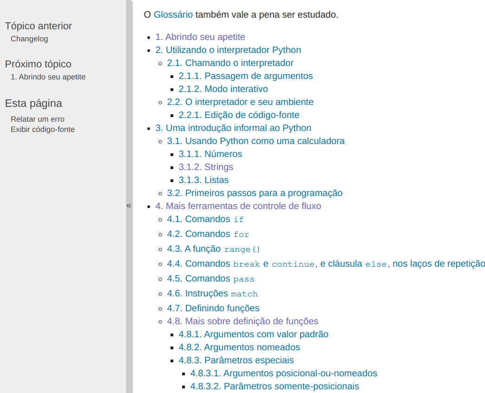
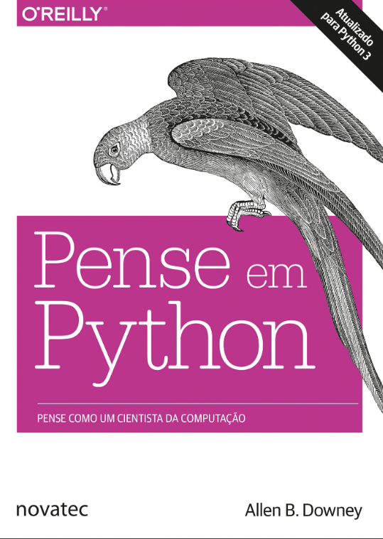
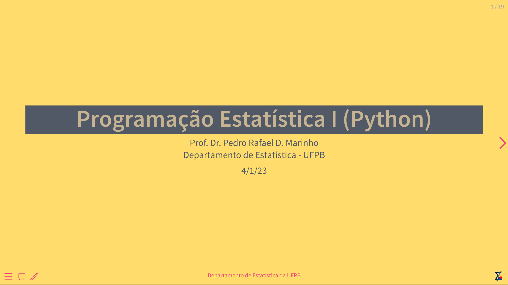
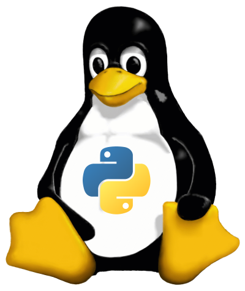
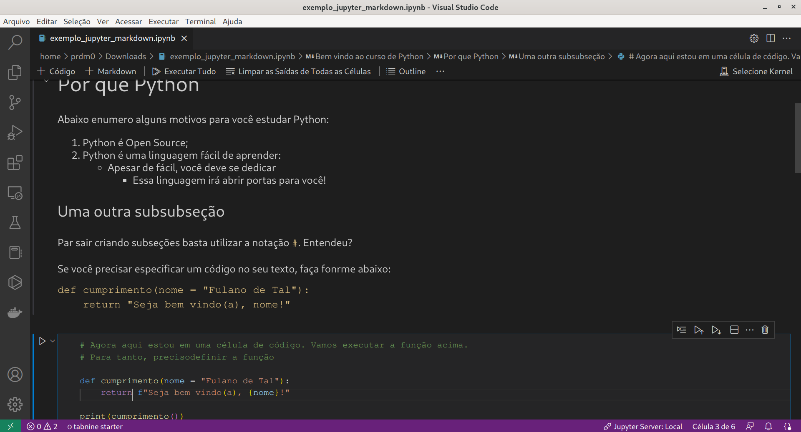
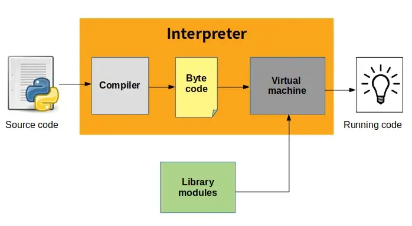
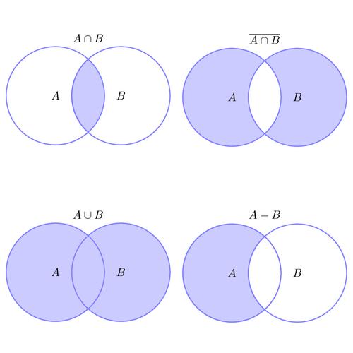

Programação Estatística I (Python)
Departamento de Estatística - UFPB
21/03/2023
Programação
Estatística I
Linguagem de Programação
Python
Apresentação
Sobre mim
Me chamo Prof. Dr. Pedro Rafael D. Marinho. Meu currículo Lattes poderá ser acessado clicando aqui.
Sou docente do Departamento de Estatística da UFPB. 👨🏫
Toda minha formação acadêmica é na área de estatística (bacharelado ao doutorado).
Tenho entusiasmo por programação, ciência de dados e aprendizagem de máquina 💻📈.
Me acompanhe no GitHub: https://github.com/prdm0.
Me acompanhe no Linkedin: https://www.linkedin.com/in/prdm0/.
O Departamento
Meu segundo lar
Departamento de Estatística da UFPB.
Por que Python?
Python
Alguns motivos de se considerar python:
- Python é Open Source;
- Python é uma linguagem de programação de propósito geral;
- Python é amplamente utilizada nas áreas de ciência de dados a aprendizagem de máquina;
- Python é uma linguagem muito fácil de se aprender, possuindo apenas 35 palavras reservadas. Porém, é claro que muitas outas coisas deverão ser aprendidas. Para se fazer ciência de dados, por exemplo, você precisará estudar algumas bibliotecas;
- Python te obrigra organizar minimamente o código, por meio de um sistema de indentação;
- Por ser uma linguagem muito utilizada, Python fará com que você converse sobre ciência de dados com muitas pessoas. Aprender Python será algo importante para o seu currículo e abrirá oportunidades de emprego.
Python
Python possui um número de palavras reservadas muito pequeno, o que facilita o aprendizado. Você poderá obter a lista das palavras reservadas fazendo:
import keyword
# Lista com palavras reservadas
palavras_reservadas = keyword.kwlist
# Palavras reservadas em Python
print(palavras_reservadas)['False', 'None', 'True', 'and', 'as', 'assert', 'async', 'await', 'break', 'class', 'continue', 'def', 'del', 'elif', 'else', 'except', 'finally', 'for', 'from', 'global', 'if', 'import', 'in', 'is', 'lambda', 'nonlocal', 'not', 'or', 'pass', 'raise', 'return', 'try', 'while', 'with', 'yield']35Origem
A linguagem Python foi desenvolvida em 1991 pelo matemático e progamador holandês Guido van Rossum.
Guido van Rossum estudou matemática na Universidade de Amsterdã.
Na comunidade ele é conhecido como “Benevolent Dictator for Life” - “Ditador Benevolente Vitalício” e sempre ditou a palavra final dos rumos da linguagem. Porém, em 2018 ele anunciou que estaria se afastando desta função.
Python atualmente é desenvolvida de forma comunitária pela fundação sem fins lucrativos denominada de Python Software Foundation.
Origem do nome
Guido começou a tarbalhar no projeto da linguagem em Dezembro 1989 ainda quando estudava na Universidade de Amsterdã. Já, o primeiro lançamento público da linguagem ocorreu em Fevereiro de 1991, quando a versão 0.9.0 foi lançada na Usenet.
O nome Python foi escolhido por Guido van Rossum, criador da linguagem, como uma homenagem ao grupo de comédia britânico Monty Python. Ele estava procurando um nome que fosse curto, simples e fácil de digitar, e que não estivesse sendo usado por outra linguagem de programação. Ele também queria que o nome fosse algo relacionado à comédia, pois ele achava que a programação deveria ser divertida e não apenas uma tarefa chata.
A disciplina
Mais detalhes
A entrevista #334 ao canal do Lex Fridman foi com o Guido van Russon, onde eles conversam sobre Python e o futuro da programação.
Para quem é destinado o curso?:
O curso é destinado para pessoas que nunca tiveram contato com programação, como também para pessoas que já programam em outras linguagens.
O andamento que será listado corresponde tão somente à uma visão geral da disciplina. Trata-se de apenas um resumo para que você possa entender qual será a dinâmica do curso. A inclusão de novos assuntos poderão ocorrer de acordo com o avanço da turma (com base no perfil médio que empiricamente irei observando).
Andamento do curso
O curso começará do básico, porém, seguirá para conceitos mais avançados da linguagem.
- Primeira parte: o enfoque será a linguagem Python, sem discussões sobre bibliotecas externas. Abordaremos temas como criação de ambiente virtuais, tipo de dados, estruturas de dados, operações matemáticas básicas, manipulação de strings, estruturas de controle de fluxo, laços, listas compreensivas, definição de funções, função lambda, funções varargs, closures e módulos.
- Segunda parte: exploraremos outros conceitos mais avançados da linguagem. Será abordado orientação à objeto (classes, heranças, heranças múltiplas e polimorfismo), alguns aspectos de programação funcional, funções geradoras e tratamento de erros. Também abordaremos as bibliotecas numpy, scipy e pandas, muito úteis para ciência de dados.
Andamento do curso
Como foi dito, o curso começará do básico, porém, seguirá para conceitos mais avançados da linguagem.
Bibliotecas Computacionais


Como estudar?
Devo apenas seguir os slides?
Tenho duas respostas que se complementam:
- Para estudar os exemplos e fazer os exercícios que irão aparecer com o andamento do curso. No decorrer da disciplina, exemplos e exercícios irão aparecer de forma intensa e será por meio desses slides que você deverá consultar os exercícios para praticar.
- Nos slides irão também aparecer como exercícios, a leitura de capítulos de livros, materiais e documentações. Esses também serão considerados nas avaliações, portanto, por favor, não os negligencies.
Em resumo, você deverá seguir os slides, mas deve atentar-se aos exercícios com indicação de leituras. Nessas leituras vocês irão encontrar explicações mais “conversadas” que te dará mais conhecimento teórico sobre os temas abordados.
Referências bibliográficas
No nosso curso, além desses slides, iremos utilizar as seguintes referências. Como dito anteriormente, atente-se aos exercícios que farão indicação de leitura.
- A documentação oficial da linguagem é um dos melhores materiais que você irá encontar para aprender Python https://docs.python.org/pt-br/3/ e está disponível em diversos idiomas. Poucas linguagens possue uma documentação robusta e didática quanto Python!
- O livro Pense em Python é um ótimo material que é disponibilizado graduitamente. Também é possível comprar o livro físico. Pense em Python é uma tradução do livro Think Python (2ª edição), de Allen B. Downey, traduzido e publicado no Brasil pela Editora Novatec sob licença da O’Reilly Media.
Referências bibliográficas

Outras Informações
Outras informações
Prezado discente, esteja sempre atento ao SIGAA. Isso é sua obrigação. Eventualmente poderei cadastrar notícias que são de vital importância para vocês. Por exemplo, poderei alterar as datas das avaliações. Se a informação estiver nos sistemas oficiais da instituição, você será o responsável por conhecê-la;
No SIGAA você terá acesso ao plano de curso;
No SIGAA encontra-se registradas as datas da respectivas avaliações: primeira, segunda e terceira avaliação, além da reposição e prova final.
Segundo a Resolução Nº 29/2020 do CONSEPE UFPB você terá direito em repor, independentemente do motivo, uma das três avaliações. Mas será apenas uma!
Bem vindo a jornada de Python
Git e GitHub
- Em dias atuais, em que vivemos programando e constantemente produzindo códigos de programação para analisar dados e/ou automatizar tarefas do nosso dia a dia, ter uma forma de versionar código é fundamental. O - git e - GitHub serão um dos seus maiores parceiros na programação.


Git e GitHub
Não negligencie o aprendizado dessas ferramentas. Por exemplo, é por meio do GitHub que muitos programadores interagem, funcionando inclusive como uma rede social de programadores.
Por onde aprender utilizar o Git e GitHub?
Bem, há diversos materiais na internet, mas coloco aqui três vídeo aulas que criei para discente de uma outra disciplina que lecionei no departamento. Com esses três vídeos você conseguirá dar seus passos e colocar o Git e GitHub em sua rotina diária de programação.
Por exemplo, essa apresentação econtar-se no meu GitHub https://github.com/prdm0. Inclusive foi no GitHub que hospedei o HTML e demais arquivos dessa apresentação para que vocês pudessem acessar o conteúdo por um simples link. Legal, não?
Aulas de Git e GitHub
Exercício: você deverá assistir as três vídeo aulas abaixo. Com elas você poderá dar os primeiros passos no uso do Git e GitHub:
Use Linux
Você não é obrigado, para cursar essa disciplina, utilizar utilizar alguma distribuição GNU/Linux. Todavia existem diversas vantagens em utilizar. Enumero algumas logo abaixo:
Utilizar um novo sistema operacional será importante para o seu portfolio. Em alguma empresa que eventualmente você venha trabalhar, pode ser que o uso do Linux seja o padrão.
O Linux é Open Source. Isso quer dizer que além de ser de graça, o seu código fonte é aberto. Dê preferência ao uso de ferramentas open source. Dê preferência à liberdade e quebre as algemas! 🎉
É fácil manter todo o sistema e seus programas atualizados. Ao invês de atualizar cada programa você poderá atualizar tudo de uma única vez.
Ao contrário do que muitas pessoas dizem, usar Linux é muito fácil. Atualmente há diversos ambientes gráficos com várias opções para você clicar e configurar o seu sistema. Alguma dessas interfaces poderá cair no seu gosto.
Quando você virar um programador, em algum momento você irá utilizar sistemas que são hospedados na nuvem. Muito provavelmente você irá hospedar uma aplicação ou irá simplesmente utilizar o poder computacional de uma máquina em algum servidor. Muito provavelmente o que você encontrará é um sistema operacional com kernel Linux .
Quer conhecer mais
sobre Linux?
Use Linux
Exercício: Leia o Capítulo 2 do meu material da disciplina de Estatística Computacional.
Assim termino a minha tentativa de evangelização sobre o Linux.

IDE para programar
Existem diversas opções para de Integrated Development Environment - IDE para se programar em Python. Enumero algumas que acho que você poderá explorar e depois escolher. É questão de gosto e você precisa experimentar para poder escolher.
- Visual Studio Code - VSCode: IDE Open Source desenvolvida pela Microsoft e que está disponível para múltiplas plataformas.
- PyCharm: IDE paga, mas que possui uma versão gratuita. Acho muito pesada. Particularmente não gosto muito.
- Spyder: IDE Open Source que é legal, mas prefiro o VSCode.
- RStudio: Sim, é possível programar em Python no RStudio. Interessante se você deseja integrar códigos R com códigos em Python, por meio da biblioteca reticulate.
- JupyterLab: é o mais recente ambiente de desenvolvimento interativo baseado na Web para notebooks, código e dados. É legal se você deseja mesclar textos e código. Útil para documentar um fluxo de análise de dados, por exemplo.
RStudio = Python e R juntos = + = ❤️
JupyterLab
Para instalar o Jupyter notebook ou o JupyterLab, uma versão mais recente do Jupyter, você antes precisa ter instalado no seu sistema operacional o Python Package Index - PyPi.
O PyPi é um repositório oficial de bibliotecas para Python. É análogo ao Comprehensive R Archive Network - CRAN do R. Ao contrário do R, onde você instala as bibliotecas dentro da seção R, o PyPi você executa no terminal de linha de comando do seu sistema operacional, isto é, fora da seção Python.
JupyterLab
Para executar uma instância do JupyterLab, execute o comando abaixo no terminal do seu sistema GNU/Linux:
A parâmetro &! executa o programa, no caso o JupyterLab, em segundo plano, ou seja, a seção do terminal do Linux ficará desocupada para rodar outros comandos Shell Script. Mas, você poderia rodar o comando assim sem especificar o &!.
JupyterLab
A extensão dos notebooks é .ipynb, em que, ipy faz alusão ao interpretador de python padrão que é utilizado no Jupyter que é o IPython e o nb refere-se à notebook. Notebooks são arquivos em que você irá misturar texto com código. O legal é que se você conhece os comandos de marcação do Markdown, você poderá utilizá-los para a construção de um texto consistente.
Além disso, é possível utilizar a sintaxe do \(\LaTeX\) para inclusão de fórmulas e notações matemáticas.
Não sabe \(\LaTeX\)? Aqui está um ótimo material para você se debruçar. É fácil. Aprenda!
JupyterLab e Markdown
Alguns comandos úteis do Markdown você poderá encontrar clicando aqui.
Dependendo do tutorial de Markdown que você possa estar utilizando, pode ser que algum código funcione de forma um pouco diferente. Por exemplo, a sintaxe de Markdown para usar na biblioteca Quarto poderá não irá funcionar, em seus aspectos mais rebuscados, no JupyterLab.
Em falando em Quarto <https://quarto.org>, aproveito para deixar a dica para que vocês venham estudar e dominar. Ele permitirá que você possa construir relatórios automáticos dinâmicos em Python, R, Julia e Observable. Por exemplo, essa apresentação foi construída em Quarto. Há no site do Quarto um tutorial básico de Markdown <https://quarto.org/docs/authoring/markdown-basics.html>. Lembre-se: Alguns comandos de Makdown que funciona no Quarto pode não funcionar no JupyterLab.
Atenção: JupyterLab e Quarto são duas coisas bem distintas. A única semelhança é que ambos permitem que você utilizem códigos Markdown para a produção de textos formatados. Por favor, não confunda!
JupyterLab e Markdown
Exercício: Salve o código no arquivo exemplo_juptylab.ipynb e importe-o no JupyterLab. Você já sabe como chamar o JupyterLab! Procure entender e memorizar os comandos que foram utilizados para a formação do texto, ou seja, os comandos de Markdown utilizados.
Caso você abra o código em um editor de texto, você verá um código que a primeira vista pode ser estranho para você. Relaxe, esse é o código que por trás, sem você ver, é salvo no arquivo .ipynb. O que você verá ao utilizar o JupyterLab são as informações importadas lá no ambiente. É uma visualização muito mais palatável.
Na verdade, o código que é salvo na extensão .ipynb é um código que também é fácil de se entender. Trata-se de um código JavaScript Object Notation - JSON. Esse formato é muito comum em APIs, sendo esta uma forma de comunicação entre sistemas.
Muitos dados não são disponíveis em arquivos CSV, XLS, XLSX e estão disponíveis em uma API, onde a informação são lidas de arquivos no formado JSON. Na verdade essa é a forma mais consistente e elegante de ler dados. Se os dados que precisa ler está disponível em uma API, você está em uma situação confortável.
JupyterLab e Markdown
Imagem do JupyterLab ao importar o arquivo exemplo_juptylab.ipynb. Esse bem formatado que mistura códigos Python é a forma que você verá o conteúdo JSON do arquivo .ipynb
Visual Studio Code - VSCode
No VSCode também é possível trabalhar com arquivos com extensão .ipynb. Do mesmo modo que no JupyterLab, no VSCode baste criar um arquivo com a extensão .ipynb e começar a trabalhar com código Markdown e seu código Python.

exemplo_juptylab.ipynb do exercício anterior. Experimente você também editar arquivos .ipynb no VSCode.Opinião pessoal
Você não perguntou, mas como a aula é minha, vou responder. 😅
O que eu prefiro para programar em Python? Ouvi essa pergunta?! Bem, entre todos os ambientes de desenvolvimento que mencionei, prefiro o VSCode.
Meus motivos são:
- É Open Source e há uma comunidade muito ativa que mantêm plugins interessantes para ele;
- Como dito no item acima, há diversos plugins/extensões que são disponíveis para ele e que ajuda o progamador em sua produtividade;
- Acho ele bem construido e me lembra editores antigos como Atom que gostava muito;
- Empresas como a Posit Ltda desenvolve produtos, a exemplo do Posit Workbench em que é possível vincular o VSCode e trabalhar com R e Python no VSCode;
- Muitas vezes prefiro trabalhar diretamente com arquivios
.py, ou seja, com o script python para que eu possa executar no interpretador iterativo ou chamar funções por linha de comando no shell bash.
É uma questão de gosto, e está tudo bem se você preferir um outro editor de código e/ou IDE de programação. Apenas saiba que na hora de construir algo maior, como um pacote ou um programa sofisticado, você precisará de arquivos .py e não arquivos .ipynb.
E repito. Arquivos .ipynb são legais, por exemplo, para documentar um fluxo de trabalho de analise de dados. Como também consigo trabalhar com notebooks em VSCode, me sinto bem servido.
Python é uma linguagem interpretada

CPython o interpretador de Python mais comumente usado e é o interpretador padrão para a linguagem Python. Ele pode ser usado para executar código Python em muitos sistemas operacionais diferentes, incluindo Windows, macOS e Linux. Além disso, ele é open source, o que significa que o código fonte está disponível para qualquer pessoa ver ou modificar.
O nome é CPython pelo fato do interpretador ter sido escrito utilizando a linguagem C.
Interpretador
Perceba que no processo de interpretação de Python, um bytecode (código de máquina) é gerado e que posteriormente é interpretado pela Python Virtual Machine - PVM. É algo semelhante que ocorre em Java, porém lá o processo é considerado uma compilação, pois todo o código é compilado de uma única vez, além de haver diversas otimizações internas no processo de conversão.
Em Python, a compilação ocorre linha por linha e logo após a interpretação do pedaço do código compilado ocorre. Em outras palavras, todo esse processo ocorre de forma dinâmica durante a execução do programa.
Seu processador não entende código Python ou de qualquer outra linguagem. Seu processador só entende código de máquina!
Implementações Alternativas
Existem diversas implementações alternativas de Python
CPython: Implementação original da linguagem escrita em C. É nessa implementação que novas funcionalidade irão aparecer primeiro;
PyPy: este é um interpretador de Python alternativo que usa uma implementação diferente da linguagem e pode ser mais rápido que o CPython em alguns casos;
IronPython: este é um interpretador de Python para .NET, que permite que você use Python em aplicativos .NET e no ambiente de desenvolvimento Visual Studio;
Jython: este é um interpretador de Python escrito em Java, que permite que você use Python em aplicativos Java e integre Python e Java em seus projetos;
MicroPython: este é um interpretador de Python para dispositivos embarcados, o que significa que ele pode ser usado em microcontroladores e outros dispositivos de baixo poder de processamento.
Atenção: iremos sempre utilizar o CPython, que é a implementação padrão da linguagem. Encare as demais implementações como informação adicional para o seu disco que armazena conhecimentos 🧠.
Código compilado de Python
Antes de tudo, deixa eu te dizer que você pode executar o código Python usando o interpretador de Python que vem disponível em algumas IDE’s que foram apresentadas, ou seja, na IDE de sua escolha, você irá criar o arquivo Python e com algum atalho irá executar o código escrito no arquivo .py no console/interpretador utilizado pela IDE.
A outra forma é executando o script em algum terminal, fora de alguma IDE. Por exemplo, suponha que em algum diretório você teinha um código Python que deseja executar fora de uma IDE. Por exemplo, suponha que tenho o arquivo soma.py no diretório /home/prdm0/Downloads. Não precisa agora entender o código. Apenas saiba que a função soma irá somar uma lista de valores passados.
import py_compile
import sys
def soma(*args):
lista = map(lambda x: float(args[x]), range(len(args)))
print(f"A soma é {sum(lista)}")
soma(*sys.argv[1:])
py_compile.compile(
file="/home/prdm0/Downloads/soma.py",
cfile="/home/prdm0/Downloads/soma.pyc"
)Ao executar o arquivo, o diretório /home/prdm0/Downloads/ será criado o arquivo soma.pyc um código binário.
Código compilado de Python
Agora no terminal do seu sistema, basta executarmos o arquivo soma.pyc:
Você terá como retorno, o valor 7.
Note que no código, os valores 1.7, 2.3 e 3.0 foram passados para a função pela lista sys.argv e esses valores são passados como string, isto é, são do tipo str. Por isso que o código teve a preocupação em converter as informações para o tipo float (veja a linha 5 do código).
Se o código te parece estranho, não se preocupe. Com o avanço do curso os conceitos irão clereando. Apenas entenda que é possível passar argumentos para funções em script .py via terminal usando a lista argv do módulo sys.
Utilizando shebang #!
O shebang, denotado por #!, é uma instrução no início de um arquivo de script que informa ao sistema operacional qual interpretador deve ser usado para executar o script.
Você pode usar o shebang para executar scripts Python na linha de comando, desde que o interpretador Python esteja instalado no seu sistema, claro!
Exemplo: Construa o arquivo shebang_cumprimento.py, de tal modo que o conteúdo do arquivo seja:
#!/usr/bin/env python
# Definindo uma função qualquer em Python.
def cumprimento(cump = "Olá pessoa"):
print(f"{cump}, bem vindo ao curso de Python!")
# Executando a função cumprimento() definida logo acima:
cumprimento()Podemos agora em um terminal shell (terminal do seu sistema) navegar até o diretório do arquivo shebang_cumprimento.py e executá-lo fazendo ./shebang_cumprimento.py. Essa notação ./arquivo é a que utilizamos em terminais do linux para exectuar arquivos binários.
Utilizando shebang #!
Antes de exectuar o arquivo, é preciso dá permissão de execução. Para tanto, devemos navegar até o diretório do arquivo e executar o comando sudo chmod +x shebang_cumprimento.py. Supondo que o arquivo shebang_cumprimento.py, esteja no diretório ~/Downloads, então deverei fazer:
# Usando o comando cd para navegar entre os diretórios.
# A notação ~ significa diretório do usuário. No meu caso
# é o diretório /home/prdm0
# Poderia ter feito cd /home/prdm0/Ðownloads. É em Downloads
# que encontra-se o arquivo shebang_cumprimento.py, no meu caso:
cd ~/Dowloads
# Dando permissão para executar o arquivo:
sudo chmod +x shebang_cumprimento.py
# Executando o arquivo:
./shebang_cumprimento.pyAtenção: é possível executar scripts de qualquer linguagem seguindo esses passos. Por exemplo, se você tem o R instalado no seu sistema, usaríamos #!/usr/bin/env R como primeira linha do script .R.
Se você não sabe onde encontra-se o binário da linguagem que desejá utilizar, no terminal linux você poderá fazer where python ou which python. No meu caso, o retorno foi /usr/bin/python.
Acresventamos o env para especificar ao sistema operacional que ele deverá executar a primeira ocorrência de python em um dado sistema operacional, uma vez que o script poderia não ser executado caso em algum outro sistema, a linguagem python não estivesse em /usr/bin.
Colocar o env diz ao sistema operacional que procure python na variável PATH do sistema.
Utilizando shebang #!
O vídeo logo abaixo mostra o procedimento para se criar um arquivo executável de um script python para ser executado via terminal.
Criando ambientes virtuais em
Os ambientes virtuais em Python são ambientes isolados que permitem que você instale pacotes e módulos em um espaço de trabalho separado do sistema. Isso permite que você tenha diferentes versões de pacotes e módulos instalados em diferentes projetos sem afetar uns aos outros. Além disso, os ambientes virtuais permitem que você teste seu código em diferentes versões do Python sem afetar a instalação global do Python no seu sistema.
# Navegando ao diretório onde criarei o ambiente:
cd ~/Downloads
# Criando o ambiente:
python -m venv meu_ambiente
# Ativando o ambiente ("meu_ambiente") criado:
source ~/Downloads/meu_ambiente/bin/activateNota: Não utilize o Download como diretório de trabalho. Coloquei no código apenas como exemplo. Eventualmente você irá deletar os arquivos em Downloads e acabaria perdendo seus projetos associados ao ambiente criado.
Criando ambientes virtuais em
Nota: Utilize o comando deactivate para sair do shell do ambiente virtual e voltar ao padrão.
Criando ambientes virtuais em
Exercício: Crie um abiente virtual no diretório raiz do seu usuário. Atribua o nome meu_primeiro_ambiente, acesse o ambiente usando o comando source e instale as bibliotecas numpy e pandas, utilizando o comando pip. Depois saia do ambiente utilizando a função deactivate.
Criando ambientes virtuais em
Para obter todos os pacotes instalados em Python no seu ambiente virtual ou mesmo na instalação padrão de Python em seu sistema operacional você poderá fazer uso do comando freeze:
appdirs==1.4.4
apsw==3.36.0.post1
attrs==21.2.0
backcall==0.2.0
bcc==0.18.0
beautifulsoup4==4.10.0
beniget==0.4.1
blinker==1.4
Brlapi==0.8.3
Brotli==1.0.9
certifi==2020.6.20
chardet==4.0.0
chrome-gnome-shell==0.0.0
click==8.0.3
colorama==0.4.4
command-not-found==0.3
cryptography==3.4.8
css-parser==1.0.7
cssselect==1.1.0
cssutils==1.0.2
cupshelpers==1.0
cycler==0.11.0
dbus-python==1.2.18
decorator==4.4.2
defer==1.0.6
distro==1.7.0
dnspython==2.1.0
feedparser==6.0.8
fonttools==4.29.1
fs==2.4.12
gast==0.5.2
hidpidaemon==18.4.6
html2text==2020.1.16
html5-parser==0.4.10
html5lib==1.1
httplib2==0.20.2
idna==3.3
ifaddr==0.1.7
importlib-metadata==4.6.4
ipython==7.31.1
jedi==0.18.0
jeepney==0.7.1
kernelstub==3.1.4
keyring==23.5.0
kiwisolver==1.3.2
language-selector==0.1
launchpadlib==1.10.16
lazr.restfulclient==0.14.4
lazr.uri==1.0.6
louis==3.20.0
lxml==4.8.0
lz4==3.1.3+dfsg
macaroonbakery==1.3.1
Markdown==3.3.6
matplotlib==3.5.1
matplotlib-inline==0.1.3
mechanize==0.4.7
more-itertools==8.10.0
mpmath==0.0.0
msgpack==1.0.3
netaddr==0.8.0
netifaces==0.11.0
numpy==1.21.5
oauthlib==3.2.0
olefile==0.46
packaging==21.3
parso==0.8.1
pexpect==4.8.0
pickleshare==0.7.5
Pillow==9.0.1
ply==3.11
pop-transition==1.1.2
prompt-toolkit==3.0.28
protobuf==3.12.4
ptyprocess==0.7.0
py7zr==0.11.3+dfsg
pycairo==1.20.1
pychm==0.8.6
pycryptodomex==3.11.0
pycups==2.0.1
pydbus==0.6.0
Pygments==2.11.2
PyGObject==3.42.1
PyJWT==2.3.0
pymacaroons==0.13.0
PyNaCl==1.5.0
pyparsing==2.4.7
PyQt5==5.15.6
PyQt5-sip==12.9.1
PyQtWebEngine==5.15.5
pyRFC3339==1.1
python-apt==2.4.0+ubuntu1
python-dateutil==2.8.1
python-debian===0.1.43ubuntu1
python-gnupg==0.4.8
python-xlib==0.29
pythran==0.10.0
pytz==2022.1
pyxdg==0.27
PyYAML==5.4.1
regex==2021.11.10
repolib==2.2.1
repoman==1.4.0
repoze.lru==0.7
requests==2.25.1
requests-toolbelt==0.9.1
Routes==2.5.1
rubber==1.6.0
scipy==1.8.0
SecretStorage==3.3.1
sessioninstaller==0.0.0
sgmllib3k==1.0.0
six==1.16.0
soupsieve==2.3.1
sympy==1.9
systemd-python==234
texttable==1.6.4
traitlets==5.1.1
ubuntu-advantage-tools==8001
ubuntu-drivers-common==0.0.0
ufoLib2==0.13.1
ufw==0.36.1
unicodedata2==14.0.0
urllib3==1.26.5
wadllib==1.3.6
wcwidth==0.2.5
webencodings==0.5.1
WebOb==1.8.6
xdg==5
xkit==0.0.0
zeroconf==0.38.3
zipp==1.0.0Criando ambientes virtuais em
Exemplo: Salvando a lista de bibliotecas Python e suas respectivas versões que encontram-se instaladas. Esse comando poderá ser utilizado dentro de uma seção shell de um ambiente virtual ou no ambiente ambiente global:
# Se quiser salvar em um arquivo para depois poder
# utilizar para instalar as bibliotecas, faça.
# Será salvo no diretório atual pwd. Você poderá
# utilizar o comando cd para navegar para o diretório
# que deseja salvar o arquivo requiriments.txt:
pip freeze > requiriments.txt
# Caso queira instalar as bibliotecas listadas no arquivo
# requiriments.txt, faça, no diretório do arquivo:
pip install -r requiriments.txtAlguns comandos úteis do pip
Listo abaixo alguns comandos úteis do pip
- Instalando um pacote:
pip install nome_do_pacote - Removendo um pacote:
pip unistall nome_do_pacote - Atualizando o
pip:pip install --upgrade pip - Atualizando um pacote:
pip install --upgrade nome_do_pacote - Listando os pacotes instalados:
pip freeze - Gera uma lista dos pacotes instalados:
pip list - Mostra informações detalhadas sobre um pacote instalado:
pip show nome_do_pacote
Nota: Ao contrário do pip freeze em que podemos salvar a saída em um arquivo texto para podermos utilizar em uma futura instalação, o pip list apenas lista uma tabela com o nome dos pacotes instalados. Você poderá substituir --upgrade por -U.
Analogias e
Me permita fazer uma pequena analogia entre Python e R, caso você já conheca alguma coisa de R.
Python
-
import bibliotecaimporta umabiblioteca. -
pip install -U bibliotecainstala umabiblioteca. Esse comando deve ser executado fora do Python. - numpy: fornece um métodos para trabalhar de forma vetorizada com arrays em Python, além de fornecer métodos para trabalhar com álgebra linear.
- scipy: fornece rotinas para trabalhar com computação científica em Python: métodos de otimização, integarção, entre outros.
- pandas: biblioteca inspirada nos data frames de R. Fornece estruturas de dados e operações para manipulação e análise de dados.
- functools: biblioteca que fornece funções de alta ordem que são úteis para trabalhar com programação funcional. Possui rotinas que são equivalentas a algumas disponíveis no R base e do pacote purrr de R.
- seaborn: biblioteca para visualização de dados que fornece interface de alto nível para a construção de gráficos estatísticos. Essa biblioteca foi inspirada no biblioteca ggplot2 de R.
- scikit-learn: biblioteca mais popular de aprendizagem de máquina, construída sobre a biblioteca numpy e que fornece uma grande quantidade de ferramentas e algoritmos.
R
-
library(biblioteca)importa umabiblioteca. -
install.packages("biblioteca")instala uma biblioteca. Comando executado em uma seção de R. - O R base já fornece rotinas para trabalharmos com arrays, além de rotinas para poder realizar operações algébricas sobre eles: inversão de matrizes, cálculo de determinante, multiplicação de matrizes, entre diversas outras.
- O R base também fornece rotinas para trabalar com computação científica. Portanto, é possível encontrar funções como
optimeintegreteque são internas à linguagem. - Do mesmo modo, o R também apresenta como parte da linguagem, os data frames. Porém, também é possível utilizar pacotes como dplyr e data.table para realizar manipulação de dados de forma mais consistente.
-
purrr: além da possibilidade de trabalhar com os funcionais padrão da linguagem R, como
apply,sapply,vapply,tapply,Map, entre outros, o pacote purrr fornece diversos outros funcionais para se trabalhar com progamação funcional em R. -ggplot2: biblioteca muito utilizada na comunidade R para construção de gráficos estatísticos e que se baseia no The Grammar of Graphics. -tidymodels: é uma coleção de pacotes que visam tornar o processo de criação de modelos de aprendizagem de máquina mais fácil e consistente.
Eu já sei R , preciso aprender Python ?
Bem, aconselho que você aprenda Python! Muito embora, em análise de dados, tudo que podemos fazer com Python também podemos fazer com R, afinal ambas as linguagens são Turing Completeness, é importante que você domine a linguagem Python .
Listo alguns motivos
- Python é uma linguagem muito fácil de se aprender;
- Python é uma linguagem de propósito geral;
- Python é uma das linguagens de programação mais utilizada em todo mundo;
- Programar em Python fará com que você possa dialogar com muitas pessoas da ciência da computação;
- Programar em Python ampliará suas oportunidades de emprego. Conhecer ambas as linguagens fará com que você se enquadre em um grande número de vagas 🎉;
- Eventualmente, você poderá vir a trabalhar em projetos fora da área de ciência de dados. Python também é útil fora do escopo de ciência de dados.
Estruturas de dados de Python
Estruturas de dados de Python
Ao aprender qualquer linguagem de programação, você deverá dominar as estruturas de dados da linguagem. Sem esse domínio, jamais você será capaz de produzir códigos pofissionais.
Mas a final, o que é estrutura de dados?
Uma estrutura de dados é uma forma de armazenar e organizar dados de maneira que eles possam ser acessados e modificados de maneira eficiente. Existem várias estruturas de dados diferentes que podem ser usadas para resolver problemas de maneira ótima e cada linguagem possui suas estruturas que precisam ser dominadas.
Abordaremos cada uma das estruturas de dados de Python e os principais métodos associados à essas estruturas. Elas também apareceram até o fim do curso e será por meio delas e outros conceitos que você irá resolver os exercícios.
Estruturas de dados de Python
O legal da linguagem Python é que ela possui poucas estruturas de dados, porém, são estruturas bastante flexíveis, permitindo resolver diversos problemas. Iremos abordar uma de cada vez, onde exploraremos exemplos e exercícios para dominarmos essas estruturas e os métodos associados a cada uma das respectivas estruturas de dados.
As estruturas de dados de Python são
-
Listas: são uma sequência mutável de itens. Você pode adicionar, remover, inserir e acessar itens em uma lista. As listas são criadas usando colchetes. Por exemplo:
[1, 2, 3]; -
Tupas: são semelhantes às listas, mas são imutáveis. Você não pode adicionar, remover ou inserir itens em uma tupla depois de criá-la. As tuplas são criadas usando parênteses. Por exemplo:
(1, 2, 3); -
Dicionários: são uma estrutura de dados que armazena pares chave-valor. Você pode usar as chaves para acessar os valores no dicionário. Os dicionários são criados usando chaves. Por exemplo:
{'nome': 'João', 'idade': 25}; -
Conjuntos: são uma coleção de itens únicos e não ordenados. Você pode adicionar, remover e verificar a existência de itens em um conjunto. Os conjuntos são criados usando chaves ou a palavra-chave set. Por exemplo:
{1, 2, 3}ouset([1, 2, 3]) -
Strings: são uma sequência de caracteres. Você pode usar as strings para armazenar e processar texto. As strings são criadas usando aspas simples ou duplas. Por exemplo:
'Olá, mundo!'ou"Olá, mundo!".
Analogia: estruturas de dados de Python e R
Anteriormente falei do pacote reticulate, em que mostrei em um vídeo curto que é possível converter uma estrutura de dados de R para Python, assim como é possível converter uma estrutura de dados de Python para R.
Caso você conheça algumas estruturas de dados de R, pensar na “equivalência” entre algumas estruturas de dados de R com estruturas de Python poderá ajudar a você pensar em quando utilizar uma dada estrutura de dados de Python.
Se você não conhece nada de R, poderá, se desdejar, pular o próximo slide; ok? 👍
Analogia entre as estruturas de dados de Python e R
em R:
- Vetor com uma única posição em R é um escalar em Python:
x <- 1 - Um vetor atômico em R é uma lista em Python:
v <- c(1.1, 2.3, 5.4) - Uma lista não nomeada em R é uma tupla em Python:
l <- list(1L, TRUE, "pedro") - Uma lista nomeada em R é um dicionário em Python:
y <- list(a = 1, b = TRUE, c = 3) - Tipo nulo e tipos lógicos em R:
NULL,TRUEeFALSE - Uma matriz em R torna-se uma matriz em numpy:
m <- matrix(1L:25L, ncol = 5, nrow = 5) - Um data frame em R torna-se um data frame em pandas:
df <- data.frame(nome = c("Maria", "João"), idade = c(10, 23))
em Python:
- Um escalar em Python:
x = 1 - Um lista em Python:
v = [1.1, 2.3, 5.4] - Uma tupla em Python:
l = (1, True, "pedro") - Um dicionário em Python
y = {'a' = 1, 'b' = True, 'c' = 3}ouy = dict(a = 1, b = True, c = 3) - Tipo nulo e tipos lógicos em Python:
None,TrueeFalse - Uma matriz em numpy:
m = np.arange(1, 26).reshape(5, 5, order='F') - Um data frame em pandas:
df = pd.DataFrame({"nome": ["Maria", "João"], "idade": [10, 23]})
Algumas convenções de nomenclatura
Variáveis: Usar snake case (estilo
snake_case), começando com letra minúscula, nomes descritivos e significativos, usar o sufixo_(underscore) para variáveis privadas. Variáveis privadas são definidas no interior de classes e são destinadas apenas para serem utilizadas dentro delas;Funções: indica-se utilizar
snake_case, começando com letra minúscula, nomes descritivos e significativos, usando verbos no nome da função para indicar sua ação. Evitar nomes genéricos!Constantes/Variáveis Globais: indixa-se escrever o nome de uma constante em caixa alta, utilizando snake case, se for necessário.
Classes: A convenção mais comum para nomear Classes é usar PascalCase, onde as palavras são combinadas sem espaços e cada primeira letra de cada palavra é maiúscula, como
MyObjectouEmployeeData.Módulos: assim como as funções, o nomes de módulos deve ser em letras minúsculas e poderá usar
snake_casepara melhorar a legibilidade.
Dica: Algumas vezes pode ser útil usar prefixos para indicar o tipo de objeto, como str_ para uma string, lst_ para uma lista, dict_ para um dicionário, set_ para conjunto, etc.

Operações matemáticas (operações básicas)
Sem recorrer ao uso de bibliotecas nem de importações de módulos, os operadores matemáticos básicos são descritos na Tabela abaixo. Note que o operador de exponencialização é definido por ** e não por ^ (comum em outras linguagens).
| Operador | Exemplo | Descrição | Resultado |
|---|---|---|---|
+ |
1 + 1 |
soma | 2 |
- |
1 - 1 |
subtração | 0 |
* |
2 * 4 |
multiplicação | 8 |
/ |
2 / 4 |
divisão | 0.5 |
** |
2 ** 3 |
exponencialização | 8 |
// |
-5 // 2 |
divisão inteira | -3 |
% |
5 % 2 |
resto da divisão | 1 |
Operações de atribuições
Assim como em muitas linguagens, o operador = é utilizado como operador de atribuição. Além disso, podemos combinar o operador = com os operadores aritméticos básicos, apresentados no slide anterior, de modo a ter uma abreviação que envolve uma operação matemática com uma atribuição.
| Operador | Exemplo | Equivalência | Valor de x |
|---|---|---|---|
x = 10 |
- | - | 10 |
+= |
x += 2 |
x = x + 2 |
12 |
-= |
x -= 2 |
x = x - 2 |
8 |
*= |
x *= 4 |
x = x * 4 |
40 |
/= |
x /= 4 |
x = x/4 |
2.5 |
**= |
x **= 3 |
x = x ** 3 |
1000 |
//= |
x //= 2 |
x = x // 3 |
3 |
%= |
x %= 3 |
x = x % 2 |
0 |
Operação de atribuição e tipos de dados
Observação: A linguagem Python realizada a tipagem do conteúdo dos objetos de forma dinâmica, ao contrário de liguagens como C e C++ que possuem tipagem estática. Se uma tentativa de alguma operação for realizada com tipos de dados incompatíveis, o erro será observado em tempo de execução do programa.
O nome de um objeto é apenas um “apelido” para um endereço de memória. O(s) dado(s) que encontra-se no endereço de memória é que tem um tipo. Linguagens com tipagem dinâmica, como Python e R são capazes de escolher que tipo utilizar dinamicamente para cada variável, podendo alterá-lo dinamicamente durante a execução do programa.
Exemplo: Em nenhuma definição das variáveis abaixo foi preciso especificar os tipos dos objetos.
# Utilizando snake_case e nomes bastante sugestivos
professor_da_ufpb = "Prof. Pedro Rafael"
aluno = "Fulano de Tal"
# x é um número qualquer:
x = 10
# Realizando operações com atribuição:
x += 2 # igual à x = x + 2
x -= 2 # igual à x = x - 2
x *= 2 # igual à x = x * 2
x /= 2 # igual à x = x / 2
x //= 2 # igual à x = x // 2
x %= 2 # igual à x = x % 2
x **= 2 # igual à x = x ** 2Mais operações matemáticas básicas
Outras operações matemáticas básicas poderão ser encontradas no módulo math. Este módulo fornece acesso às funções matemáticas definidas pelo padrão C.
Você poderá observar todas as funções disponível em um módulo utilizado a função dir():
# Importando o módulo math
import math
# Quando aplicado à um módulo, dir() retornará todos os seus atributos. Isso inclui
# todas as funções internas implementadas no módulo:
dir(math)['__doc__', '__loader__', '__name__', '__package__', '__spec__', 'acos', 'acosh', 'asin', 'asinh', 'atan', 'atan2', 'atanh', 'ceil', 'comb', 'copysign', 'cos', 'cosh', 'degrees', 'dist', 'e', 'erf', 'erfc', 'exp', 'expm1', 'fabs', 'factorial', 'floor', 'fmod', 'frexp', 'fsum', 'gamma', 'gcd', 'hypot', 'inf', 'isclose', 'isfinite', 'isinf', 'isnan', 'isqrt', 'lcm', 'ldexp', 'lgamma', 'log', 'log10', 'log1p', 'log2', 'modf', 'nan', 'nextafter', 'perm', 'pi', 'pow', 'prod', 'radians', 'remainder', 'sin', 'sinh', 'sqrt', 'tan', 'tanh', 'tau', 'trunc', 'ulp']Mais operações matemáticas básicas
Você poderá obter informações sobre o que cada uma das funções faz usando a função help().
Exemplo: Consultado o que faz o método cos do módulo math:
Help on built-in function cos in module math:
cos(x, /)
Return the cosine of x (measured in radians).Nota: Mais adiante no curso falaremos de módulos e como criar nosso próprios módulos. Todavia, adianto que módulos nada mais são que arquivos .py para que possamos com a instrução import importar para outros scripts Python.
Mais operações matemáticas básicas
A Tabela abaixo lista algumas funções do módulo math que podem ser úteis. Como exercício, estude a documentação das funções do módulo math.
| Método | Exemplo | Comentário |
|---|---|---|
sqrt |
math.sqrt(3) |
Obtendo \(\sqrt(3)\) |
pi |
math.pi |
Obtendo o valor de \(\pi\) |
e |
math.e |
Obtendo a constante de Euler |
exp |
math.exp(2) |
Obtendo \(\exp(2)\) |
log |
math.log(2) |
Obtendo \(\log(2)\) (logaritmo natural) |
log10 |
math.log10(2) |
Obtendo o logaritmo de 2 na base 10 |
factorial |
math.factorial(5) |
Obtendo \(5!\) (fatorial de 5) |
comb |
math.comb(5, 2) |
Obtendo a combinação de 5 à 2 |
perm |
math.perm(5, 2) |
Obtendo o arranjo 5 à 2 |
trunc |
math.trunc(10.73) |
Obtendo o valor trunvcado de o número 10.73 |
gamma |
math.gramma(3) |
Obtendo \(\Gamma(3)\) (gamma de 3) |
lgamma |
math.lgamma(-3) |
Calculadno \(\log(|\Gamma(-3)|)\) |
ceil |
math.ceil(10.3) |
Arredondando 10.3 para cima (resultado = 11) |
floor |
math.floor(10.9) |
Arredondando 10.9 para baixo (resultado = 10) |
sin |
math.sin(3) |
Obtendo \(\sin(3)\) |
cos |
math.cos(-1) |
Calculando \(\cos(-1)\) |
tan |
math.tan(4) |
Calculando \(\tan(4)\) |
fsum |
math.fsum([1, 2]) |
Somando os valores da lista [1, 2]
|
Mais operações matemáticas básicas
Existe algumas funções matemáticas que são disponíveis na linguagem Python mas são encontram-se disponíveis no módulo math. Na Tabela que segue, listo as principais:
| Método | Exemplo | Comentário |
|---|---|---|
round |
round(5.7) |
Arredonda 5.7 (resultado 6) |
sum |
sum[5,2,0]) |
Retorna a soma da lista [5, 2, 0]
|
min |
min([5,2,0]) |
Retorna o mínimo da lista [5, 2, 0]
|
max |
max([5,2,0]) |
Retorna o máximo da lista [5, 2, 0]
|
abs |
abs(-5) |
Retorna o valor absoluto de -5, i.e, \(|-5|\) |
divmod |
divmod(5,2) |
Retorna uma tupla com a divisão inteira de 5 por 2 e o resto |
Métodos ou funções?
Muito embora Python é uma linguagem multiparadigma, o paradigma de orientação à objeto, em Python, é muito consistente. Ainda falaremos melhor sobre orientação à objeto. Porém, uma das características desse paradigma de programação é o encapsulamento, em que os objetos encapsulam métodos e atributos.
Observação: Aqui, chamaremos de métodos as funções encapsuladas de um objeto. Leia os comentários dos códigos!
Exemplo: A função __abs__() será um método do objeto math.sin(-1). No VSCode você poderá apertar Tab para ver os métodos de math.sin(-1). Você também poderá utilizar a função dir():
# Importando o módulo math
import math
# Realizando a operação sin(-1), utilizando a função sin() de math.
# "resultado" é um objeto. Objetos em linguagens orientadas a objeto
# poderá encapsular métodos, que são funções que podem operar sobre
# o objeto:
resultado = math.sin(-1)
# Checando os métodos e atributos do objeto "resultado":
dir(resultado)
# Imprimindo o resultado:['__abs__', '__add__', '__bool__', '__ceil__', '__class__', '__delattr__', '__dir__', '__divmod__', '__doc__', '__eq__', '__float__', '__floor__', '__floordiv__', '__format__', '__ge__', '__getattribute__', '__getformat__', '__getnewargs__', '__gt__', '__hash__', '__init__', '__init_subclass__', '__int__', '__le__', '__lt__', '__mod__', '__mul__', '__ne__', '__neg__', '__new__', '__pos__', '__pow__', '__radd__', '__rdivmod__', '__reduce__', '__reduce_ex__', '__repr__', '__rfloordiv__', '__rmod__', '__rmul__', '__round__', '__rpow__', '__rsub__', '__rtruediv__', '__setattr__', '__setformat__', '__sizeof__', '__str__', '__sub__', '__subclasshook__', '__truediv__', '__trunc__', 'as_integer_ratio', 'conjugate', 'fromhex', 'hex', 'imag', 'is_integer', 'real']-0.84147098480789650.84147098480789650.8414709848078965Métodos ou funções?
Não estranhe os métodos definidos no padrão __nome__. Eles são simplesmente funções comuns que você poderá definir dentro da classe de um objeto. Aqui você está lendo mais um termo comum em linguagens orientadas à objetos; o conceito de classes.
Exemplo: Todo objeto tem sua classe. Veja a classe de um objeto usando a função type():
Métodos ou funções?
Muitas funções em Python são documentadas com Docstrings que nada mais são que uma descrição rápida a respeito da função. Falaremos sobre Docstrings mais a frente, mas você poderá consultar a Docstring de uma função usando o método __doc__ que normalmente é implementado nas funções de um módulo.
Exemplo: Consultando a Docstring da função sin do módulo math:
# Importe os módulos no início do arquivo .py. Não é uma boa prática de programação importar
# módulos no meio de uma arquivo:
import math
# Retornando a docstring da função sin do módulo math:
math.sin.__doc__'Return the sine of x (measured in radians).'Nota: Os métodos no padrão __name__ são chamadas de métodos mágicos ou simplesmente de “Dunder”. Métodos Dunder são funções como qualquer outra que você poderá implementar em classes de objetos. Mais a frente no curso voltaremos a esse tema.
Operadores relacionais
Operadores relacionais são utilizados para comparar valores em Python. A Tabela que segue apresenta os operadores relacionais em Python. Como resultado da comparação, teremos um valor booleano True ou False.
| Operador | Descrição | Exemplo |
|---|---|---|
== |
Igualdade |
x == y retorna verdadeiro se x for igual a y
|
!= |
Diferença |
x != y retorna verdadeiro se x for diferente de y
|
> |
Maior que |
x > y retorna verdadeiro se x for maior que y
|
< |
Menor que |
x < y retorna verdadeiro se x for menor que y
|
>= |
Maior ou igual |
x >= y retorna verdadeiro se x for maior ou igual a y
|
<= |
Menor ou igual |
x <= y retorna verdadeiro se x for menor ou igual a y
|
Operadores lógicos
As operações lógicas e relacionais envolve o típo lógico bool de Python (por exemplo, faça type(True)), podendo retornar True ou False, a depender da condição. Podemos combinalas e assim, iremos construir expressões lógicas.
A Tabela abaixo apresenta os operadores lógicos de Python:
| Operador em Python | Operação lógica |
|---|---|
not |
negação |
and |
e |
or |
ou |
Exercício: Estude o código baixo. Entenda o motivo dos resultados das expressões lógicas:
Entrada de dados
Em Python podemos utilizar a função input() para solicitar informação ao usuário do programa. É importante notar que a função input() irá ler a informação digitada pelo usuário como uma string, isto é, como uma cadeia de caracteres.
Exemplo: Solicitando ao usuário uma informação, convertendo para inteiro usando int() e usando operadores lógicos e relacionais para a criação de expressões lógicas.
Conversões de tipos de dados
Assim como utilizamos a fução int para converter a entra para inteiro, também poderemos tentar outros tipos de coerções.
Exemplo: utilizando as funções chr(), int(), float() e bool(), para forçar a converção de objetos para string, inteiro, real e booleano, respectivamente:
Conversões de tipos de dados
Se você é novo em programação, o que pode parecer mais estranho no exemplo anterior é que o número 65 foi convertido para o caracter "A" e para o valor True, ao utilizarmos as funções de conversão de tipos chr e bool, respectivamente.
Em Python, assim como ocorre em diversas outras linguagens, qualquer número diferente de zero é convertido para True ao utilizar a conversão para o tipo booleano, sendo False a conversão do número zero.
Já a conversão do número 65 para o caracter "A" se deve a íntima relação entre números interios de 0 a 255 para caracteres da Tabela ASCII. Por exemplo, print(chr(64)) a string composta pelo character @.
Operação com strings
Em Python, é possível realizar operações em variáveis do tipo strings. Strings são cadeias de caracteres, como por exemplo, print("Olá, bem vindo ao curso") a frase entre aspas que é passada como argumento para a função print().
Exemplo (contatenação): concatenando duas ou mais strings:
Operação com strings
Você também poderá utilizar o operador de multiplicação * para repetir uma string. Também é possível obter a quantidade de caracteres de uma dada string, utilizando a função len() ou o método Dunder ( __len__()) encapsulado em um objeto do tipo str.
Exemplo: repetindo, uma string qualquer, em um total igual à metade do comprimento da string arredondado para cima:
import math
str_qualquer = "\tLero lero, ...\n"
print(str_qualquer * math.ceil(len(str_qualquer)/2)) Lero lero, ...
Lero lero, ...
Lero lero, ...
Lero lero, ...
Lero lero, ...
Lero lero, ...
Lero lero, ...
Lero lero, ...Observação: os caracteres \t e \n em uma string referem-se à um único caracter. São caracteres especiais que denotam tabulação e nova linha, respectivamente.
Composição de string
Poderemos compor strings utilizando alguns marcadores (“placeholders”). São eles:
| Marcador | Tipo |
|---|---|
%d |
Números inteiros |
%f |
Números decimais |
%s |
Strings |
Exemplo: Considere as variáveis nome = "Dennis Ritchie", importancia = "criador da linguagem C", ano = 2011. Vamos construir a string "Dennis Ritchie, criador da linguagem C", faleceu em 2011.". Para isso, poderemos aproveitar as informações que estão contidas nas variáveis nome, importancia e ano.
# nome e importancia são variáveis do tipo str (são strings):
nome = "Dennis Ritchie"
importancia = "criador da linguagem C"
# a variável ano é do tipo int:
ano = 2011
# Montando a string que desejamos:
print("%s, %s, faleceu em %d." % (nome, importancia, ano))Dennis Ritchie, criador da linguagem C, faleceu em 2011.Composição de string
Podemos também incrementar os operadores %d, %f e %s para flexibilizar um pouco mais a formatação, caso seja necessário, adequando melhor a saída com o uso de operadores de largura de campo.
Exemplo: estude o exemplo que segue:
Composição de string
O sinal de negativo no exemplo anterior informa que o elemento deverá ser alinhado à esquerda.
A notação %numeros, informa qual a quantidade de espaço para os caracteres devem ser reservado para a string. Se uma quantidade inferior for reservada, a linguagem Python irá negligenciar essa informação e imprimirá a string inteira. Tente fazer print("%1s" % ("Pedro Rafael")).
A notação %a.bf para números decimais, informa que deverá reservar um espaço de tamanho a para representar o número, e este número será impresso com b casas decimais. A informação a deverá incluir o ponto como parte do número. Por exemplo, rode o código print("%10.2f" % (10)).
Composição de string
Uma forma mais moderna de compor strings é usando o método format(). Considere o próximo exemplo.
Exemplo: considere o exemplo abaixo, onde utilizamos o método format(). Note que a linguagem Python é zero of set, ou seja, é “zero-based”, o que significa que a indexação começa por 0.
Formatação de alinhamento
Utilizando o método format, também poderemos especificar “configurar” a máscara para impressão dos dados, isto é, poderemos manipular a largura de campo. Também podemos utilizar formatação de alinhamento no método format(). São elas:
| Formatação | Exemplo | Descrição |
|---|---|---|
{:<} |
"{:<10}" |
Alinha à esquerda e ocupa no mínimo 10 caracteres |
{:>} |
"{:>10}" |
Alinha à direita e ocupa no mínimo 10 caracteres |
{:^} |
"{:^10}" |
Centraliza e ocupa no mínimo 10 caracteres |
{:=^10} |
"{:=^10}" |
Centraliza e ocupa no mínimo 10 caracteres, justificando para o sinal |
{:0=3d} |
"{:0=3d}" |
Alinha à direita, preenche com zeros e ocupa no mínimo 3 caracteres |
{:x<4} |
"{:x<4}" |
Alinha à esquerda e preenche com “x” e ocupa no mínimo 4 caracteres |
{:b>5} |
"{:b>5}" |
Alinha à direita e preenche com “b” e ocupa no mínimo 5 caracteres |
Formatação de alinhamento
Exemplo: considere o exemplo que segue. Olhe com cuidado cada uma das formatações. Entender bem elas ajudará você organizar a saída das suas funções.
left right center ==center==005axxxbbbb2Formatação de alinhamento
Exercício: Considere os objetos nome, idade e salario, conforme abaixo:
Monte uma f-string s, tal que print(s) retorne:
Nome: [João da Silva+++++++], Idade: [0038], Salário: [***12500.370***]Formatação de alinhamento
Exercício: Considere o código que segue:
Utilizando o método format(), os operadores de alinhamento e um único print(), implemente um código que forneça a saída que segue:
Nome = Sofia.............................................
Idade = ____35____
Altura = .....171.50cmFormatação de alinhamento
Solução:
Utilizando f-strings
A partir da versão 3.6 de Python, uma nova forma bastante conveniente surgiu para realizar composição de strings, são as chamadas f-strings. Chama-se assim pois usamos notação f"".
Diferenças e semelhaças para o uso do format():
Fatiando strings
Em Python, assim como poderemos fazer em outas estruturas de dados que veremos, uma string é um iterador, isto é, é um objeto ao qual poderemos percorrer.
Se podemos percober, então isso implica que poderemos acessar subelementos.
Exemplo: Acessando substrings de uma string principal.
Fatiando strings
Algumas observações
Python é zero-based, i.e., o seu sistema de indexão começa em zero
No que indexão de trás para frente são realizadas utilizando valores negativos e o último elemento é o elemento -1, uma vez que 0 = -0, e portanto não faria sentido indexar de trás para frete a partir do índice -0.
Strings não são estruturas de dados, e sim, tipos de dados! Todavia, é possível realizar indexações como vimos. As demais estruturas de dados de Python, em que poderemos utilizar índices para acessar seus elementos, segue o mesmo esquema de indexação das strings, por exemplo, as listas e tuplas.
Listas
Em Python, listas são um tipo de estrutura de dados em que podemos armazenar dados, podendo ser de tipos diferentes, e podemos percorrer pelo índice do elemento na lista.
Lembre-se que assim como as strings, as demais estruturas de dados de Python começam sua indexação por zero.
Exemplo: Note que acessar os índices de trás para crente, a indexação começa de \(-1\), do mesmo modo que em strings e em arrays do Numpy adiante no curso.
Listas
Também poderemos ter listas aninhadas e o acesso se dá da mesma forma. O exemplo que segue explora isso. Leia os comentários.
Exemplo: Criando listas aninhadas e acessando seus elementos.
# Frutas
frutas = ['laranja', 'uva', 'maçã', 'tomate']
quantidade_frutas = [10, 20, 5, 8]
# Verduras
verduras = ['cebola', 'alho', 'pimentão']
quantidade_verduras = [10, 8, 5]
# Frutas e verduras
frutas_e_verduras = [[frutas, quantidade_frutas], [verduras, quantidade_verduras]]
# Obtendo da lista aninhada frutas_e_verduras, apenas as frutas:
frutas_e_verduras[0][0]
# Quais as duas últimas frutas?
frutas_e_verduras[0][0][len(frutas_e_verduras[0][0])-2:]['laranja', 'uva', 'maçã', 'tomate']
['maçã', 'tomate']Listas
Em linguagens orientadas à objetos, como Python, quase tudo são objetos. Objetos geralmente possui métodos associados. Objetos da classe list fornecem diversos métodos úteis.
<class 'list'>
True
True
['__add__', '__class__', '__class_getitem__', '__contains__', '__delattr__', '__delitem__', '__dir__', '__doc__', '__eq__', '__format__', '__ge__', '__getattribute__', '__getitem__', '__gt__', '__hash__', '__iadd__', '__imul__', '__init__', '__init_subclass__', '__iter__', '__le__', '__len__', '__lt__', '__mul__', '__ne__', '__new__', '__reduce__', '__reduce_ex__', '__repr__', '__reversed__', '__rmul__', '__setattr__', '__setitem__', '__sizeof__', '__str__', '__subclasshook__', 'append', 'clear', 'copy', 'count', 'extend', 'index', 'insert', 'pop', 'remove', 'reverse', 'sort']Listas
Alguns métoods aparerem com os nomes envolvidos por duplo underscores __. Esses métodos são chamados de métodos mágicos ou métodos dunder. Tais métodos são úteis para permitir flexibilidade na classe. Por exemplo, os desenvolvedores da classe list implementaram o método __add__ que permitirá a soma de duas listas.
Exemplo: Note que foi possível chamar o método mágico __add__ de um objeto da classe list. Invocar o método mágico diretamente pode não ser uma boa prática. A implementação de __add__ na classe interna list permite que possamos usar o operador binário + para somar listas. Note que a soma de listas nesse caso significa concatenar as listas.
Listas
É aconselhável evitar o uso direto dos métodos mágicos em Python. Os métodos mágicos são uma forma de encapsulamento e ocultação de código que permite ao programador escrever código mais conciso e limpo. No entanto, os métodos mágicos também podem tornar o código mais difícil de entender e manter, portanto, é importante usá-los com sabedoria.
Usando palavras mais diretas, quando você estiver implementando suas próprias classes, você poderá implementar, por exemplo, o método mágico __add__ que permitirá você utilizar operações de soma com seus objetos.
Exemplo: Método __doc__ é usado para retornar docstrings (strings de documentação) de métodos e objetos.
'Built-in mutable sequence.\n\nIf no argument is given, the constructor creates a new empty list.\nThe argument must be an iterable if specified.'Listas
Exemplo: Perceba que podemos comparar l1 == l2, uma vez que __eq__ é um método da classe list. Note também que podemos fazer len(l1) ou len(l2) uma vez que existe o método __len__ implementado no interior da classe list:
# Criando duas listas (l1 e l2):
l1 = [100, 2, 7, 8, 10]
l2 = [12, 20, -1]
# Só é possível comparar l1 com l2 abaixo, pois quem implementou
# a classe list, implementou o método mágico __eq__:
l1 == l2
# Equivale a fazer
l1.__eq__(l2)
# Podemos obter o tamanho de uma lista porque existe o método
# __len__ implementado na classe list:
len(l1)
# Poderíamos ter feito:
l1.__len__()False
False
5
5Exercício: Pesquise na internet qual a flexibilidade que os métodos mágicos __le__, __lt__, __ge__ e __gt__ fornecem a classe list ou a qualquer classe que os contém.
Listas
Exemplo: Não precisa entender o código por completo. Apenas note que implementei o método mágico __sub__ de Python e criei uma nova classe de listas, de nome MinhaLista, que permite subtrair duas listas. Note que não podemos subtrair listas padrões de Python, porém, agora poderemos subtrair objetos da classe MinhaLista segundo alguma lógica. A lógica implementada em __sub__ é subtrair os dois primeiros elementos. Você poderia implementar qualquer outra! Aqui, MinhaLista é uma subclasse (classe derivada/classe filha) de list.
class MinhaLista(list):
# Adicionando a capacidade de subtrair. Aqui
# será subtraído os primeiros elementos:
def __sub__(self, outra):
return self[0] - outra[0]
# Cirando dois objetos da classe MinhaLista:
l1 = MinhaLista([1, 2, 3])
l2 = MinhaLista([5, 4, 3])
# Agora posso subtrair duas listas segundo alguma lógica:
l1 - l2-4Listas
Portanto, os métodos mágicos são nada mais que métodos implementados na definição de uma classe de Python que visam dar maior flexibilidade aos objetos (instâncias) dessas classes, permitindo, por exemplo, definir operações de soma, subtração, multiplicação, divisão, comparações usando operadores relacionais entre objetos, calcular o tamanho, entre outros recursos.
Por exemplo, somar duas strings significa juntá-las. O que uma operação irá fazer depende do que você implementar na lógica da função. Você aprenderá isso mais tarde.
Foque, por enquanto, apenas nos métodos de um objeto do tipo list cujos nomes não estão envoltos de __, isto é, nos métodos que não são “métodos mágicos”.
Listas
Abaixo segue uma tabela de métodos úteis de um objeto que é instância da classe list. Seja l = [1, 2, 5, 7]
| Método | Exemplo | Descrição |
|---|---|---|
append |
l.append([1,6,7]) |
Adiciona a lista [1,6,7] ao final de l
|
clear |
l.clear() |
Remove todos elementos de l
|
copy |
g = l.copy() |
Cria uma cópia de l
|
count |
l.count(1) |
Conta o número de ocorrências de 1 em l
|
extend |
l.extend([1,2]) |
Adiciona os elementos de [1,2] ao final de l
|
index |
l.index(2) |
Retorna o índice da primeira ocorrência de 2
|
insert |
l.insert(1, 3) |
Insere 3 na posição 1 da lista l
|
remove |
l.remove(2) |
Remove a primeira ocorrência de 2 em l
|
pop |
l.pop(len(l)-1) |
Remove o último elemento da lista l, devolvendo o elemento removido |
reverse |
l.reverse() |
Retorna a lista reversa de l
|
sort |
l.sort() |
Ordena a lista l
|
Listas
Exercício: Com base no exemplo da tabela acima, descreva a diferença dos métodos append e extend.
Muitos métodos de Python utilizando passagem por referência, isto é, não realizam cópias do objeto para realizar a operação. No exemplo que segue, note que l.sort() ordena a lista l sem realizar cópia. Se desejamos realizar uma cópia, deveremos usar o método copy.
Exemplo: Estude o código abaixo. Note que com a função id() poderemos obter o endereço de memória de objetos em Python. Perceba também que operações de atribuição de listas, no caso, l2 = l1 não fará com que l2 seja uma cópia de l1. Isso trará desepenho computacional, uma vez que evitará cópias desnecessárias, mas poderá pegar de surpresa iniciantes na linguagem.
l1 = [4, 7, 8, -1]
# Ordenando l.
l1.sort()
# Note que não foi preciso reatribuir l1.sort() à l1
# para que l1 tivesse seus valores ordenados
print(l1)
# Note também que l2 não é uma cópia de l1 quando
# utilizamos o operador de atribuição =
l2 = l1 # l2 não é cópia de l1
# Aqui l2 olha para o mesmo endereço de memória de l1.
print(f"Endereço de l1 = {id(l1)}")
print(f"Endereço de l2 = {id(l2)}")
# Se quisermos que l3 seja uma cópia de l1, usamos copy():
l3 = l1.copy()
print(f"Endereço de l1 = {id(l1)}")
print(f"Endereço de l2 = {id(l2)}")
# Note que ordenar l2 irá ordenar l1, uma vez que l2
# não é cópia de l1. Nesse caso, dizemos que l2 é um view
# de l1. Ambos apontam para o mesmo enderelo de memória.
l2.sort() # Ordenar l2 equivale a ordenar l1.
print(l1)[-1, 4, 7, 8]
Endereço de l1 = 140233934401664
Endereço de l2 = 140233934401664
Endereço de l1 = 140233934401664
Endereço de l2 = 140233934401664
[-1, 4, 7, 8]Listas
Qual a diferenças de pop e remove?
- O método remove irá remover a primeira ocorrência do valor passado ao método. Por exemplo.
l.remove(1)irá remover a primeira ocorrência do valor1na listal. Já, fazerl.pop(1)irá remover o elemento na posição1da listal.
- Uma outra diferença importante é que o método
popirá devolver o elemento removido. Ou seja,removido = l.pop(1)irá armazenar o valor removido que se encontrava na posição 1 da listale poderá ser armazenado no objetoremovido. Porém, tente fazer o mesmo comremove.
Listas
Exemplo: Removendo elementos da lista l usando os métodos pop e remove. Note que b será do tipo None, uma vez que remove irá remover a primeira ocorrência de 1 em l, mas sem devolver o valor removido.
Listas
Exemplo: O código que segue apresentam alguns exemplos comentados de como acessar elementos de uma lista:
# Criando a lista x:
x = [1, 6, 3, 0, -1, 2, 8, 7]
print(f"Acessando os três primeiros: {x[:3]}")
print(f"Quarto ao último elemento de l: {x[4:]}")
# Note que o último elemento não é incluso no fatiamento:
print(f"Acessando do segundo ao quinto: {x[1:6]}")
# Poderemos utilizar um terceiro índice.
# Note que o último elemento não é incluso no fatiamento:
print(f"Acessando do primeiro ao sétimo, pulando 2 {x[1:7]}")
# Poderemos utilizar um terceiro índice para dar o passo:
print(f"Acessando do 5 ao primeiro, pulando 2: {x[5::-2]}")
# Note que o elemento na posição 3 não é incluso:
print(f"Acessando do último ao terceiro, pulando 2: {x[len(x):3:-2]}")Acessando os três primeiros: [1, 6, 3]
Quarto ao último elemento de l: [-1, 2, 8, 7]
Acessando do segundo ao quinto: [6, 3, 0, -1, 2]
Acessando do primeiro ao sétimo, pulando 2 [6, 3, 0, -1, 2, 8]
Acessando do 5 ao primeiro, pulando 2: [2, 0, 6]
Acessando do último ao terceiro, pulando 2: [7, 2]Listas
O último índice de uma fatia (slice) de lista ou outra estrutura em Python não é incluso porque as fatias usam uma notação “início:fim” onde “início” é incluído na fatia e “fim” é excluído. Portanto, ao selecionar uma fatia com o índice final desejado, é preciso adicionar 1 a esse índice.
Além disso:
l = [4, 8, 0, 12, 9, 13, 11]
# Acessando todos os elementos de l. É o mesmo
# que considerar apenas l:
print(f"l[:] = {l[:]}")
# Obtendo a lista invertida (passo 1):
print(f"l[::-1] = {l[::-1]}")
# Obtendo a lista invertida (passo 2):
print(f"l[::-2] = {l[::-2]}")l[:] = [4, 8, 0, 12, 9, 13, 11]
l[::-1] = [11, 13, 9, 12, 0, 8, 4]
l[::-2] = [11, 9, 0, 4]Tuplas
Diferentemente de listas, que que poderemos alterar os seus valores, tuplas são estruturas de dados imutáveis em Python.
Você poderá usar tuplas para representar valores constantes.
Tuplas
Durante toda a execução do programa, uma tupla não poderá ser modificada. No exemplo anterior, você poderá no decorrer do programa redefinir o objeto t, ou seja, poderá alterar todo o objeto t, que poderá em algum momento, por exemplo, se tornar uma lista, mas enquanto t for uma tupla, operações de indexação para substituição de valor não poderá ser realizada. Tuplas são imutáveis!
Tuplas
No código anterior, note (4,). Para criar uma túpla com um único elemento você derá colocar a vírgula. Note que type((4)) não é do tipo tuple:
# (4) não é uma tupla com um único elemento:
type((4)) == tuple
# (4,) é uma tupla com um único elemento:
type((4,)) == tupleFalse
TrueOutra forma de chegar poderia ser utilizando a função isinstance(obj, classe):
Tuplas
Apesar de termos usado a função isinstance na explicação de tuplas em Python, essa função é aplicável sempre que você desejar saber se um objeto é de uma determinada instância.
Normalmente usamos type() para chegar a classe de algum objeto. Por exemplo, se desejarmos saber qual a classe de objetos quaisquer, sejam eles l, s e t, faremos:
<class 'list'>
<class 'str'>
<class 'tuple'>Note que o retorno é a classe dos respectivos objetos. Para s foi retornado o tipo de dado (string/str) e para l e t foi retornado a estrutura de dados, list e tuple, respectivamente. Emfim, será retornado a classe do objeto que poderá fazer mensão ao tipo, estrutura de dados ou à alguma característica do objeto que você deseja inspecionar.
Observe o uso da função type na aba anterior. Se desejo fazer uma pergunta sobre os tipos que agora sabemos quais são, uma vez que foram retornados por type, poderemos perguntar fazendo:
Tuplas
Os parênteses em tuplas são opicionais. Considere o exemplo:
A linguagem Python não impedirá você de ter tuplas concatenadas, ou eventualmente ter uma lista como elemento de uma tuplas. Concatenações coerentes de estruturas de dados normalmente serão permissíveis.
Tuplas
Objetos do tipo tupla apresentam dois métodos comuns, desconsiderando os métodos mágicos (métodos dunder). São eles o método index() e o método count(). O primeiro, fornece o índice da primeira ocorrência de uma valor na tupla. Já o segundo, conta o número de ocorrências de uma quantidade na lista.
Veja:
frutas = ("uva", "banana", "abacaxi", "abacaxi")
# Buscando o número de ocorrências de uva e abacaixi e
# salvando na lista frequência:
frequencia = [frutas.count("uva"), frutas.count("abacaxi")]
print(f"[N. de uva, N. de abacaxi] = {frequencia}\n")
# Buscando o índice da primeira ocorrência de banana:
print(f"\'banana\' encontra-se na posição {frutas.index('banana')} de frutas\n")[N. de uva, N. de abacaxi] = [1, 2]
'banana' encontra-se na posição 1 de frutasDicionários
Dicionários consiste em uma estrutura de dados similar à uma lista, porém com propriedade de acesso diferente. No caso das listas, podemos acessar seus elementos por índices numéricos. Já um dicionário, cada elemento possui uma chave. É por meio dessa chave que acessamos os respectivos ítens.
| Id | Aluno | Nota 1 | Nota 2 | Nota 3 |
|---|---|---|---|---|
| 01 | João da Silva | 7,25 | 8.74 | 8,20 |
| 02 | Fabiano Dalison | 8,00 | 9,25 | 7,90 |
| 03 | José Walter | 10,00 | 9,50 | 9,90 |
Dicionários
Sem uso de data frames, em Pandas que aprenderemos a utilizar adiante no curso, poderíamos salvar o registro da tabela acima usando uma estrutura de dados da classe dict, isto é, em um dicionário. Veja:
import statistics as st
id = (1, 2, 3)
nomes = ["João da Silva", "Fabiano Dalison", "José Walter"]
notas = [[7.25, 8.74, 8.20], [8.00, 9.25, 7.90], [10.00, 9.50, 9.90]]
turma = {'id': id, 'nomes': nomes, 'notas': notas}
print(f"--> Aluno {turma['nomes'][0]}, matrícula 0{turma['id'][0]}: média {round(st.mean(turma['notas'][0]), 2)}\n")
print(f"--> Aluno {turma['nomes'][1]}, matrícula 0{turma['id'][1]}: média {round(st.mean(turma['notas'][1]), 2)}\n")
print(f"--> Aluno {turma['nomes'][2]}, matrícula 0{turma['id'][2]}: média {round(st.mean(turma['notas'][2]), 2)}")--> Aluno João da Silva, matrícula 01: média 8.06
--> Aluno Fabiano Dalison, matrícula 02: média 8.38
--> Aluno José Walter, matrícula 03: média 9.8Dicionários
Os métodos associados à um objeto do tipo dict, encontra-se ao lado. Desconsidere os métodos dunder (métodos double underscore):
['__class__', '__class_getitem__', '__contains__', '__delattr__', '__delitem__', '__dir__', '__doc__', '__eq__', '__format__', '__ge__', '__getattribute__', '__getitem__', '__gt__', '__hash__', '__init__', '__init_subclass__', '__ior__', '__iter__', '__le__', '__len__', '__lt__', '__ne__', '__new__', '__or__', '__reduce__', '__reduce_ex__', '__repr__', '__reversed__', '__ror__', '__setattr__', '__setitem__', '__sizeof__', '__str__', '__subclasshook__', 'clear', 'copy', 'fromkeys', 'get', 'items', 'keys', 'pop', 'popitem', 'setdefault', 'update', 'values']Dicionário
Listando apenas os métodos comuns, isto é, todos os métodos que não começam com underscore:
# Agora, você não precisa entender por completo o
# código que segue. Mas, basicamente o que ele está
# fazendo é retornar os métodos de {} (um dicionário)
# que não começam com underscore '_':
[i for i in dir({}) if not i.startswith('_')]['clear', 'copy', 'fromkeys', 'get', 'items', 'keys', 'pop', 'popitem', 'setdefault', 'update', 'values']Dicionários
Considere o dicionários d = {'a': 1, 'b': 2, 'c': 3}. Então,
| Método | Exemplo | Descrição |
|---|---|---|
clear |
d.clear() |
Limpa o dicionário, tendo assim um dicionário vazio. |
copy |
x = d.copy() |
x é uma cópia do dicionário d (x is d é False). |
fromkeys |
x = d.fromkeys(['a', 'c'], 0) |
x é um novo dicionário com chaves 'a' e b com 0 sendo fizado como valor padrão. |
items |
l = list(d.items()) |
d.items() retorna um objeto da classe dict_items que poderá ser convertida para uma lista usando a função list(). |
pop |
d.pop('e', -1) |
Remove e devolve o valor da chave removida. Caso a chave não seja encontrada no dicionário, -1 será devolvido. |
setdefault |
d.setdefault('e', 4) |
Coloca a chave e e o valor 4 ao dicionário d. Caso a chave já exista em d, o valor da chave será substituído por 4. |
values |
x = list(d.values()) |
d.values() retorna um objeto da classe dict_values que poderá ser convertido à uma lista de valores usando a função list(). |
get |
x = d.get('c') |
Retorna o valor 3 (item da chave c) do dicionário d. Caso a chave não exista, None será retornado. |
keys |
x = list(d.keys()) |
Retorna um objeto da classe dict_keys que poderá ser convertido para uma lista com a função list. |
popitem |
d.popitem() |
Remove o último item (chave e valor) do dicionário d e retorna a tupla ('c', 3). |
update |
d.update({'a': 1.2, 'e': 5.03}) |
Atualiza o dicionário d, modificando o valor da chave a para 1.2 e introduzindo uma nova informação de chave e e valor 5.03. |
Dicionários
Poderemos concatenar dicionários, assim como podemos concatenar listas e tuplas. Além disso, é possível utilizar operadores relacionais e lógicos para construir expressões de consulta. No caso do exemplo, foi utilizado os operadores < (operador relacional) e and (operador E lógico). Como compor expressões dependerá da sua necessidade e criatividade.
Veja:
import math
# Criando um dicionário com chaves nomes e idade:
d = {
'pessoas': {
'nomes': ["Maria", "Renata", "José"],
'idades': [20, 18, 25]
},
'escolas': ['A', 'B', 'C']
}
dic_interno = d['pessoas']
n = len(dic_interno['idades'])
soma = math.fsum(dic_interno['idades'])
# Chegando se existe alguma chame de nome "Renata" no
# dicionário dic_interno e além disso, se a média
# das idades é menor que 30.
("Renata" in dic_interno['nomes']) and (soma/n) < 30TrueDicionários
Exercício: Considerando o dicionário aninhado d no código do slide anterior, construia uma expressão que retorne um valor da classe bool (True ou False), em que a regra é:
Testar se dentro do dicionário
'pessoas', primeiro ítem do dicionáriod, existe emnomesas stringsJoãoouJosée que a média dos valores da chaveidadesesteja no intervalo [20, 35) e que além disso exista no ítemescolasalguma com o nomeAouE.
O operador in poderá ser utilizado com listas e tuplas, estruturas que já conversamos, como também com conjuntos, estrutura de dados que será apresentada em breve. Por exemplo, not(2 in [1,2,3]) or 1 in (-1,1) irá retornar True.
Dicionários
A partir da versão 3.9 de Python, é possível utilizar o operador infix | para concatenar dois dicionários. Análogo ao método update(), porém com uma notação mais simples.
Conjuntos
Conjuntos, set em Python, são estruturas de dados que implementam oerações de lógica de conjuntos matemáticos, como união, intersecção, diferença, entre outras.
🔊 Atenção: A principal característica de conjuntos é não admitir elementos repetidos. Uma seguinda característica importante, é que conjuntos não mantém a ordem de seus elementos.
Se a ordem e repetição de elementos for importante para você, pense no uso de estruturas como listas e tuplas, ok?
Conjuntos
No que se refere a ordem dos elementos, a estrutura de dados de dicionário também não é indicada. Admite-se chaves distintas com elementos iguais, mas não poderemos ter chaves repetivas e nem considerar a ordem dos elementos. Você até poderá fazer {'a': 1, 'a': 2}, ao construir um dicionário, porém, apenas o último par de chave e valor será considerado.
Conjuntos
Exemplo: Atualizando um conjunto com elementos de outro conjunto. Note que esse método, assim como o método add, realiza modificações no objeto sem termos que reatribuir o resultado, isto é, realiza a operação sem necessidade de cópiar o objeto. Aliás, isso é uma prática comum em muitos métodos de Python.
a = {1, 2, 3, 4}
b = {5, 6, 7}
# Imprimindo os endereços dos objetos na memória
print(f"Endereço de 'a': {hex(id(a))}")
print(f"Endereço de 'b': {hex(id(b))}")
# Iremos modificar 'a', onde introduziremos
# os elementos de 'b' em a:
a.update(b)
# Observando novamente o endereço de 'a':
print(f"Endereço de 'a': {hex(id(a))}")📌 Note que o endereço de memória do objeto a permanece igual ao endereço de memória de a antes de atualizarmos a com o método update.
Conjuntos
Você poderá testar se um determinado valor pertence à um conjunto em Python à um conjunto utilizando a função in, assim como também poderá fazer uso em estruturas como listas, tuplas e dicionários.
Exemplo: Estude o código abaixo. Note que podemos converter uma lista em um set, podendo ser útil, por exemplo, quando desejarmos conhecer as categorias possíveis em uma lista.
# Aqui o retorno será True, uma vez que
# 7 é elemento do conjunto:
7 in {1, 2, 3, 7, 5}
# Aqui o retorno é False, uma vez que o conjunto
# {1, 2} não é subconjunto do conjunto {1, 2, -1}:
{1, 2} in {1, 2, -1}
# Convertendo uma lista com elementos repetidos
# em um conjunto:
l = [1, 2, 3, -1, -1, 2, 3, 1]
conjunto_l = set(l)
print(f"Conjunto l = {conjunto_l}!")True
False
Conjunto l = {1, 2, 3, -1}!Conjuntos
Algumas operações importantes de conjuntos que poderão ser úteis ao manipular conjuntos Python:

Conjuntos
Abaixo segue a Tabela com as principais operações entre conjuntos que você poderá realizar usando a estrutura de dados set. Outras operações de conjuntos poderão ser obtidas com base nas operações de união, intersecção, diferença e diferença simétrica.
| Operação | Sintaxe | Exemplo | Resultado |
|---|---|---|---|
| União: \(A \cup B\) | | |
{1, 2} | {3, 4} |
{1, 2, 3, 4} |
| Intersecção: \(A \cap B\) | & |
{1, 0} & {0, 4} |
{0} |
| Diferença: \(A - B\) | - |
{7, 6, 8} - {6, 8} |
{7} |
| Diferença simétrica: \(\overline{A \cap B}\) | ^ |
{1, 2, 3} ^ {8, 5, 3} |
{1, 2, 5, 8} |
Conjuntos
Alguns outros métodos importantes para manipular conjuntos em Python são:
pop(): no caso de conjuntos, o métodopop()sempre irá remover o último elemento do conjunto. Não será possível passar uma posição, tendo em vista que em conjuntos, a posição não importa.issubset(): checa se um conjunto é subconjunto de outro.issuperset(): checa se um conjunto é superconjunto de outro.isdisjoint(): checa se os conjuntos são disjuntos.remove(): remove o valor passado como argumento. Note que aqui, diferentemente de lista, não é preciso destacar que o método removerar a primeira ocorrência, uma vez que não há elementos repetidos em conjuntos.discard(): remove um elemento de um conjunto, caso esse elemento pertença ao conjunto.
Conjuntos
Exemplo: Exemplo do uso dos métodos enumerados no slide anterior:
# Definição de um conjunto qualquer:
con1 = {-1, 0, 3, -2, 10}
con2 = {10, -2, 3}
# Note que os conjuntos con1 e con2 não são conjuntos
# disjuntos. Há elementos que eles compartilham:
con1.isdisjoint(con2)
# Note também que con2 é subconjunto de con1. Lembre-se
# sempre que em conjunto a ordem não importa.FalseTrueTrue0Conjuntos
Exercício: Como vimos, tanto o método remove() quanto o método discard() são métodos objetos da classe set que são úteis para remover elementos de um conjunto. Descreva a principal diferenças dos dois métodos. Aprensente um exemplo.
is e ==
Em geral, poderemos comparar dois ou mais objetos Python utilizando a função is, além de construir expressões utilizando os operadores lógicos (and, or e not) e/ou relacionais (<, >, <=, > e !=).
Algumas estruturas de dados, como dicionários, não permitem o uso de operadores relacionais <, >, <= e >=, porém, por exemplo, é possível fazer uso dos operadores == e !=. O que essas operações significam ao comparar cada objeto dependerá das características intrínsecas a natureza lógica da implementação das classes dos objetos comparados.
Aos poucos, na medida que os nossos programas irão ficando maiores, e o número de exemplos e exercícios forem aumentando, esses detalhes irão sendo absorvidos.
is e ==
Gostaria apenas de destacar o uso do operador is e comparar com o do operador ==. O operador relacional de igual (==) é útil, como já sabemos, para poder comparar dois objetos, no que refere-se à igualdade dos seus conteúdos e estrutura. Por exemplo, [1, 2, 3] == {1, 2, 3} irá retornar False pois a pesar de terem o mesmo elemento, os objetos são diferentes (classes diferentes). [1, 2, 3] é uma lista, enquanto, {1, 2, 3} é uma tupla.
Do mesmo modo que {1, 2, 3} == {3, 4, 2} também retornará False, uma vez que mesmo sendo objetos com mesma estrutura de dados, eles possuem elementos diferentes.
is e ==
Algumas estruturas de dados não tem noção de ordem. Por exemplo, em conjuntos, {1, 4, -1} == {-1, 1, 4} irá retornar True, uma vez que conjuntos são iguais se ambos os objetos são da mesma classe e possuem os mesmos elementos. Isso, por exemplo, não ocorre com listas.
Veja:
is e ==
O operador is, por sua vez, é uma comparação ainda mais forte sobre a igualdade de dois objetos. O operador is também comparar se os objetos são iguais na memória do computador. Por exemplo,
# Conjuntos:
s1 = {1, 4, -1}
s2 = {1, 4, -1}
s3 = {-1, 4, 1}
print(f"s1 is s2: {s1 is s2}\n(id_s1: {hex(id(s1))}, id_s2: {hex(id(s2))}\n")
print(f"s1 is s3: {s1 is s3}\n(id_s1: {hex(id(s1))}, id_s3: {hex(id(s3))}\n")
print(f"s2 is s3: {s2 is s3}\n(id_s2: {hex(id(s2))}, id_s3: {hex(id(s3))}")Usamos hex() para converter um número inteiro para hexadecimal. Leia sobre as funções bin() e otc().
is e ==
Exercício: Inspecione o código que segue. Exlique os porquês das saídas!
--> x is z: False
--> x == z: True
--> y is z: False
--> y == z: True
--> x == y: True
--> x is y: TrueQual estrutura de dados usar?
Se você não sabe qual estrutura de dados utilizar, a Tabela que segue te dará uma luz 💡:
| Listas | Tuplas | Dicionários | Conjuntos | |
|---|---|---|---|---|
| Ordem dos elementos | Fixa | Fixa | Mantida a partir do Python 3.7 | Indeterminada |
| Tamanho | Variável | Fixo | Variável | Variável |
| Elementos Repetidos | Sim | Sim | Apenas os valores, mas com chaves únicas | Não |
| Pesquisa | Sequêncial, índice numérico | Sequêncial, índice numérico | Direta por chave | Direta por valor |
| Alterações | Sim | Não | Sim | Sim |
| Uso primário | Sequências de valores não necessariamente ordenados | Sequências de valores constantes não necessariamente ordenados | Dados indexados por chave | Verificação de unicidade, operações com conjuntos |
Input de dados
As vezes precisamos interagir com a execução de um código, seja para obter dados ou fornecer algum tipo de informação. Na maioria dos casos, essas informações vem do teclado. Poderíamos ter informações de outra fonte, como, por exemplo, um sensor para captar humidade do ar, um leitor de impressões digitais, uma câmera associada à algum algoritmo que forneça algum tipo de informação através da leitura de imagens, etc.
Para cada um desses casos, você quando dominar a linguagem Python, saberá ir atrás de bibliotecas específicas que permitam o uso de entradas mais específicas.
Input de dados
Como mencionado, na maioria dos casos, o input vem do teclado ⌨️. Para este propósito, Python fornece a função input(), que possui um parâmetro opcional, que é a string que será enviada para o usuário.
Ao executarmos o código acima, o prompt de comandos aguardará pela entrada de dados por parte de usuário, uma vez informado o valor e enviado, ele será impresso. Mas qual o tipo de dados que teremos em n?
Input de dados
Você já sabe obter a classe de um objeto em Python. Com o comando type(), não é isso?
Portanto, você irá notar que a classe de n é str, e assim irá concluir que o objeto n é uma string.
Dica: Facilmente poderemos converter uma string para um valor numérico (int ou float), ou mesmo avaliar diretamente a string usando a função eval(). Para converter, por exemplo, a string 1.7 para int faça int('1.7'). De forma análoga, para converter para float, faça float('1.7').
Exemplo: Inicialmente execute apenas a linha 3 e entre com os daddos no formato solicitado. Após isso, execute o restante do código.
# Execute apenas a linha abaixo, entre com os dados e
# só depois execute as demais linhas:
dados = input("Informe seu nome, peso (em kg), altura (em m) no formato [nome, peso, altura]: ")
# Execute as linhas de código abaixo apenas depois de executar
# a linha de código com o input acima.
# Avaliando a entrada de dados:
lista = eval(dados)
# Calculando o IMC (Índice de Massa Corporal):
imc = round(lista[1]/(lista[2]**lista[2]), 2)
# Imprimindo o resultado:
print(f"{lista[0]}, seu IMC é {imc}")Input de dados
Exemplo: Sei que você poderá estar se perguntando o por quê do código anterior não funcionar ao executarmos todo código de uma única vez. Abaixo há uma solução. Não precisa entender todo ele. No momento ainda não falei sobre estruturas de controle nem de repetições.
# Para responder sua curiosidade, a função input()
# irá aguardar a entrada quando esta está associada
# à uma estrutura de repetição.
while True:
dados = input("Informe seu nome, peso (em kg), altura (em m) no formato [nome, peso, altura]: ")
if dados.lower() == 'q':
print("Tchau!")
break
# Execute as linhas de código abaixo apenas depois de executar
# a linha de código com o input acima.
# Avaliando a entrada de dados:
lista = eval(dados)
# Calculando o IMC (Índice de Massa Corporal):
imc = round(lista[1]/(lista[2]**lista[2]), 2)
# Imprimindo o resultado:
print(f"{lista[0]}, seu IMC é {imc}")]Estruturas condicionais
if
Nem sempre todas as linhas dos programas serão executadas. Muitas vezes, seŕa mais interessante decidir que partes do programa devem ser executadas com base no resultado de uma condição. A base dessas decisões consistirá em expressões lógicas que permitam representar escolhas em programas.
A condição if é uma estrutura de controle de fluxo em Python que permite a execução de um bloco de código somente se a condição especificada for verdadeira.
A notação < > não faz parte da instrução e só está aí para destacar a necessidade de uma condição lógica. Se essa condição for verdadeira, o bloco de instruções será executado.
if
Exemplo: Instrução if avaliando a condição num > 5. Perceba que o resultado de avaliação de uma condição será sempre um objeto do tipo bool, isto é, será um valor booleano, podendo ser True (bloco de instruções do if será executado) ou False (bloco de instruções do if será ignorado).
if
Exemplo: Corra um input de cada vez para depois poder correr o restante do código. No exemplo do IMC implementei uma estratégia simples para contornar o “problema” de rodar vários inputs de uma única vez. Nesse exemplo, você entrará com os valores de a e b, respectivamente, e o programa irá decidir qual valor informado é o vaior.
# Execute os inputs, um de cada vez!
a = float(input("Primeiro valor: "))
b = float(input("Segundo valor: "))
if a > b:
print("O primeiro valor é maior!")
if not a > b:
print("O segundo valor é o maior!")Note que no segundo if foi utilizado a negação not. Você poderia ter utilizado a condição b < a. Lemtre-se também que as entradas do input() são strings e devem ser covertidas para números.
if
📢 ATENÇÃO: Python é uma linguagem que exige que o programador idente corretamente o seu código. A identação é um aspecto importante da sintaxe em Python, pois é usada para definir blocos de código. Em Python, os blocos de código são definidos pela indentação, que é o espaçamento à esquerda de uma linha de código. O interpretador de Python irá indicar o erro como IndentationError.
if
Em outras linguagens de programação, como R e C, não há a obrigação do programador alinhar os blocos de instruções de código, muito embora é uma prática recomentada pelas boas práticas de programação. Nessas linguagens usa-se a notação de chaves ({}) para delimitar os blocos de instruções. Em Python, essa delimitação se dá por identação coerente. Usa-se 4 espaços (não tabulação) para definir blocos de instruições em Python. Identar código ajudará a entendermos melhor as hierarquias de códigos, ajudando na manutenção.
Exercícios 📚
Exercício: Escreva um programa que pergunte a velocidade do carro de um motorista. Caso ultrapasse 80 km/h, exiba uma mensagem dizendo que o usuário foi multado. Nesse caso, exiba o valor da multa, cobranco R$ 5,00 por km/h acima de 80 km/h.
Exercício: Escreva um progama que leia três números. O programa deverá retornar uma lista com os valores em ordem.
Exercício: Escreva um programa que pergunte o salário do funcionário e calcule o valor do aumento. Para salários superiores a \(R\$\,1.250,00\), calcule um aumento de \(10\%\). Para salários inferiores ou iguais, o aumento será de \(15\%\).
else
No código que segue, o que ocorre se x e y forem iguais?
O código será executado, mas nenhum bloco de ambos os if’s irão ser executados. Poderíamos querer tratar a condição que não contempla as duas condições das instruções if’s. Para isso, poderíamos utilizar a insturção else.
else
Poderíamos ter resolvido a situação acima, para incluir todas as demais situações possíveis que não encontram-se contempladas nas duas condições das instruções if’s, assim:
else
A instrução else com o seu bloco de instruções Python estará associada ao if mais próximo. O bloco de instruições de comandos Python associados à instrução else será executado em qualquer situação que não for atendida a condição da instrução if mais próxima. Portanto, se a condição do if mais próximo for False, o bloco de instruições do else hierarquicamente mais próximo ao if em questão será executado.
Além disso, você poderá ter if’s e else’s aninhados, a depender de sua necessidade. Veja no exemplo que segue.
Exemplo: O programa abaixo calcula a conta de telefone com três faixas de preços:
elif
Exercício: Considere o código que segue. Explique o que ele faz!
x = 25
y = 15
if x < y:
print("x é menor que y")
else:
if x > y and x % 2 == 0:
print("x é maior que y e é um número par")
else:
if x > y or x % 2 != 0:
print("x é maior que y ou é um número ímpar")
else:
print("x é igual a y")x é maior que y ou é um número ímparUma forma mais conveniente para escrever instruções else-if é utilizar a instrução elif.
elif
Exemplo: Compare o código anterior, que utiliza as instruções else-if com o código que utiliza a instrução elif.
elif
A vantagem de usar elif em vez de if e else é que ele permite testar várias condições de uma só vez, sem a necessidade de aninhar vários if e else uns dentro dos outros. Isso faz com que o código fique mais limpo, fácil de ler e manter.
Além disso, o uso de elif também economiza tempo de processamento, pois assim que uma condição é verdadeira, o programa para de verificar as outras condições e executa o código correspondente. Se fosse usado somente “if” e “else”, todas as condições precisariam ser verificadas, mesmo que uma já tenha sido verdadeira.
Exercícios 📚
Exercício: Escreva um programa que leia dois números e que pergunte qual operação você deseja realizar. Você deve poder calcular soma (+), subtração (-), multiplicação (*) e divisão (/). Informe qual a operação foi escolhida e exiba o resultado da operação solicitada.
Exercício: Crie um programa em Python que pergunte ao usuário qual é a sua idade e, com base nisso, informe se o usuário é considerado criança, adolescente ou adulto. Utilize as seguintes faixas etárias:
- Criança: até 12 anos
- Adolescente: de 13 a 17 anos
- Adulto: 18 anos ou mais
Exercício: Crie um programa em Python que, dada uma string, informe se ela é um palíndromo ou não. Um palíndromo é uma palavra ou frase que é lida da mesma forma da esquerda para a direita e da direita para a esquerda. Dica: Se s é uma string, lista ou tupla, então você poderá reverter utilizando passando o valor -1 como o terceiro índixe de indexação, ou seja, s[::-1] irá fornecer a a mesma estrutura, com os elementos em ordem reversa.
Exercícios 📚
Exercício: Escreva um progama para aprovar o empréstimo bancário para compra de uma casa. O programa deve perguntar o valor da casa a comprar, o salário e a quantidade de anos a pagar. O valor da prestação mensal não pode ser superior a \(30\%\) do salário. Calcule o valor da prestação como sendo o valor da casa a comprar dividido pelo número de meses a pagar.
Exercício: Escreva um programa que calcule o preço a pagar pelo fornecimento de energia elétrica. Pergunte a quantidade de kWh consumida e o tipo de instalação: R (residencias), I (indústrias) e C (comércios). Calcule o preço a pagar de acordo a Tabela ao lado.
| Tipo | Faixa (kWh) | Preço |
|---|---|---|
| Residencial | Até 500 | \(R\$\, 0,40\) |
| Acima de 500 | \(R\$\, 0,65\) | |
| Comercial | Até 1000 | \(R\$\, 0,55\) |
| Acima de 1000 | \(R\$\, 0,60\) | |
| Industrial | Até 5000 | \(R\$\, 0,55\) |
| Acima de 5000 | \(R\$\, 0,60\) |
Exercícios 📚
Exercício:Leia os Capítulo 1 e 2 do livro Pense em Python.
Exercícios 📚
Exercício: Crie um programa que pergunte a sigla de um país ao usuário e de acordo com a sigla, seja informada a capital do país. Considere o dicionário abaixo. Permita que o programa trate situações em que o usuário possa informar as siglas em maúscula ou minúscula. Dica: use a função in para buscar se um elemento encontra-se dentro da estrutura de dados.
Estruturas repetições
Loops
As estruturas de repetição são fundamentais em qualquer linguagem de programação, e Python não é exceção. Elas permitem que um trecho de código seja executado várias vezes, dependendo de uma condição específica. Isso é útil em muitas situações, como percorrer uma lista de elementos, processar dados em um arquivo ou realizar cálculos matemáticos.
Repetições representam a base de vários programas. São utilizadas para executar a mesma parte de um programa várias vezes, normalmente dependendo de uma condição ou de um critério de parada.
Uma das instruções de repetição amplamente utilizada é a instrução while. Ela é composta de seguinte forma:
Loops
A coindição do laço while não utiliza a notação “< >”. O uso de “< >” é apenas para destacar a necessidade de haver uma condição. Enquanto a condição for cerdadeira, as instruções do laço/loop while serão executadas.
Exemplo: A condição ao ser avaliada devolverá um valor da classe bool, isto é, um True (condição verdadeira) ou False (condição falsa). Portanto, poderíamos criar um loop infinito colocando a condição como True.
# A instrução print dentro do laço while
# será sempre executada, uma vez que a
# condição é sempre verdadeira.
while True:
print("Eu serei executado sempre!")Cuidado com os loops infinitos! Eles são úteis nas simulações estatísticas, mas deve haver em seu interior algum teste de condição que force a parada do laço. Veremos isso em breve.
Loops
No loop while, normalmente a condição envolve uma variável de controle, em que devemos nos preocupar atualizá-la no interior do laço para que em alguma iteração a condição do loop se torne falsa. Note, no código abaixo, que x é incrimentada, e isso garante que em algum momento a condição x <= 3 se tornará falsa.
Loops
No código abaixo, são gerados valores pseudo-aleatórios no intervalo fechado \([0, 10]\), em que os valores pares são armazenados no objeto lista_pares e todos os valores (par ou não) são acumulados no objeto acumulado. O laço para, quando a condição acumulado <= 100 não for mais atendia.
# Biblioteca com métodos para geração de números
# pseudo-aleatórios.
import random
# Fixando uma semente que garante que os
# números gerados aleatoriamente serão
# sempre os mesmos ao executarmos todo
# o código que segue.
random.seed(0)
lista_pares = []
acumulado = 0
while acumulado <= 100:
valor = random.randint(0, 10)
if(valor % 2 == 0):
lista_pares.append(valor)
acumulado += valor
print(f"Valor acumulado: {acumulado}")
print(f"Lista com os pares: {lista_pares}")Valor acumulado: 103
Lista com os pares: [6, 6, 0, 4, 8, 6, 4, 8, 2, 4, 2, 4, 8]Loops
Em muitas vezes é útil utilizar o laço while quando não sabemos o número de iterações que será realizado. Pense em um problema em que a variável de controle na condição do while é aleatória. Veja o caso abaixo:
import random
random.seed(0)
i = 0
lista = list()
while i <= 5:
i = random.randint(0, 10)
lista.append(i)
print(f"lista = {lista}")lista = [6]Simplesmente olando para o código acima, não seria possível dizer quais os valores em a quantidade de elementos em lista. Isso porquê a variável de controle i é obtida de forma pseudo-aleatória.
Loops
A instrção de loop for é útil quando o conjunto que iremos iterar está bem definido, isto é, conhecemos o conjunto e a quantidade de elementos.
Nesse sentido, a estrutura de repetição for torna-se adequada para iterarmos em uma estrutura de dados, como uma lista, tupla, conjunto ou dicionário.
Na forma geral acima, <conjunto> é alguma estrutura de dados de Python e não necessariamente objetos da classe set. É tudo aquilo que você deseja percorrer, normalmente uma lista, tupla, dicionário, conjunto, arrays de Numpy, Data Frame de Pandas, ou toda e qualquer outra estrutura de dados.
Loops
Onde você consegue utilizar a instrução for você também conseguirá utilizar a insturção while, uma vez que tudo que você poderá fazer utilizando um for também poderá ser feito com um while. Porém, o uso do for é mais adequado quando conhecemos a estrutura de queremos iterar, uma vez que não precisamos nos preocupara o comprimento dela.
Exemplo: No exemplo que segue, o código toma a raiz quadrada dos elementos da lista x e acumula o seu valor. Compare o uso das instruções for e do whilhe resolvendo o mesmo problema.
import random
import math
x = [1.2, 4.3, 0.22, 4.3, 5.52, 3.63, 1.01, 2.2]
n = len(x) # Comprimento da estrutura de dados x
acumulado = 0
i = 0 # Variável de controle do laço while
while i < n:
acumulado += math.sqrt(x[i])
i += 1
print(f"Sqrt(acumulado) = {round(acumulado, 2)}")Sqrt(acumulado) = 12.45Loops
Podemos utiliza a função range para gerar listas simples. A função range não retorna um objeto da classe list proprieamente dito. A função range irá retornar um gerador.
Iremos falar mais a frente como construir nossos geradores, que são objetos que permitem percorrer os itens de uma coleção (como uma lista ou string) de forma sequencial, porém, sem armazenar toda a sequência na memória.
Loops
Exemplo: Você também poderá utilizar mais variáveis para poder iterar, a depender da dimensão de cada elemento do objeto que deseja percorrer. Note que no exemplo abaixo, cada elemento de obj_1 é uma tupla com três elementos e cada elemento de obj_2 é uma lista com cada elemento sendo uma outra lista com três elementos. Você poderia criar obj_3 de forma análoga sendo uma tupla de tuplas com três elementos.
# Uma lista de tuplas:
obj_1 = [("São Paulo", "São Paulo", "Sudeste"), ("Rio de Janeiro", "Rio de Janeiro", "Sudeste"), ("Belo Horizonte", "Minas Gerais", "Sudeste")]
# Uma lista de listas:
obj_2 = [["São Paulo", "São Paulo", "Sudeste"], ["Rio de Janeiro", "Rio de Janeiro", "Sudeste"], ["Belo Horizonte", "Minas Gerais", "Sudeste"]]
for x, y, z in obj_1:
print("Cidade:", x, "| Estado:", y, "| Região:", z)Cidade: São Paulo | Estado: São Paulo | Região: Sudeste
Cidade: Rio de Janeiro | Estado: Rio de Janeiro | Região: Sudeste
Cidade: Belo Horizonte | Estado: Minas Gerais | Região: SudesteCidade: São Paulo | Estado: São Paulo | Região: Sudeste
Cidade: Rio de Janeiro | Estado: Rio de Janeiro | Região: Sudeste
Cidade: Belo Horizonte | Estado: Minas Gerais | Região: Sudeste
range e enumerate
Você poderá transformar um range em uma lista ou tupla, envolvendo range por list ou tuple, respectivamente. Se não for especificado um valor mínimo, o gerador começará em 0.
0
1
2
3
4
2
3
4Note que a o último elemento não é incluindo, do mesmo modo quando utilizamos fatiamento de listas e tuplas, e queremos acessar um subconjunto.
range e enumerate
A função range() adimite três argumentos, o primeiro e o segundo dizem respeito ao início e fim da sequência (fim não incluso) e o terceiro refere-se ao passo da sequência. Estude o código que segue. A função itre() constroi um iterador que é uma sequência de valores, acessadas uma de cada vez, com a função next() ou com o método __next__()
# Criando uma gerador de sequência de valores convertendo-o
# para um iterador com a instrução iter():
x = iter(range(0, 20, 2))
# Verificando o comprimento do iterador x:
n = x.__length_hint__()
# Obtendo o primeiro elemento do iterador x:
p1 = x.__next__() # ou next(x)
# Obtendo o segundo elemento do iterador x:
p2 = x.__next__() # ou next(x)
print(f"p1 = {p1}")
print(f"p2 = {p2}")p1 = 0
p2 = 2Note que a cada chamada de __next()__, damos um passo no iterador, isto é, acessamos o próximo elemento.
range e enumerate
Com a função enumarate, poderemos ampliar as funcionalidades do loop for de forma fácil. Muitas vezes desejamos acessar o elemento de uma sequência e sua posição.
Normalmente é utilizada para iterar sobre uma lista e adicionar um índice numérico a cada item. Ela é muito útil quando precisamos acessar tanto o item da lista quanto o seu índice, pois evita que seja necessário criar uma contagem manual.
range e enumerate
A função range() cria uma sequência de valores inteiros. A partir de métodos da biblioteca Numpy, que serão apresentados mais adiante no curso, saberemos criar uma sequência de valores reais. Os métodos da biblioteca Numpy são computacionalmente eficientes, mas nada impede que você crie um código para retornar uma lista de valores do tipo float. Bastaria utilizar uma estrutura de repetição.
Algumas observações a respeito do código anterior. A função enumerate() retorna um objeto enumerado a partir do valor 0 (zero). Caso tenha interesse em começar a enumeração por outro valor, passe o valor iniciar como segundo argumento da função, isto é, passe o valor de incício ao argumento start da função enumerate().
Com o método enumerate() conseguiremos enumear listas, tuplas, dicionários e conjuntos.
range e enumerate
Exemplo: Percorrendo uma lista, tupla, dicionário e conjuntos em Python. Note que no loop for duas variáveis, a e b foram utilizadas, assim como no exemplo anterior. Isso se deve ao fato de que a função enumerate retorna um objeto enumerável com duas informações. Veja, por exemplo, que o retorno de list(enumerate(x)) é uma lista de tuplas com dois elementos.
x = [[1, 2, 3], [4, 5, 6]]
y = ((1, 2, 3), (4, 5, 6))
z = {1, 2, 3, 4, 5, 6}
w = {'a': 1, 'b': 2, 'c': 3, 'd': 4, 'e': 5, 'f': 6}
# Enumerando x:
for a, b in enumerate(x):
print(f"{a}: {b}")
# Enumerando y:
for a, b in enumerate(y):
print(f"{a}: {b}")
# Enumerando z:
for a, b in enumerate(z):
print(f"{a}: {b}")
# Enumerando w:
for a, b in enumerate(w):
print(f"{a}: {b}")
# Convertendo um enumerate para uma lista:
print(list(enumerate(x)))zip
A função zip em Python é utilizada para juntar elementos de diferentes sequências (como listas, tuplas ou strings) em pares. Ela retorna um objeto iterável, chamado de “zip object”, que pode ser convertido em uma lista, tupla ou dicionário.
zip
No exemplo anterior, note que as tuplas foram formadas até a quantidade de elementos da lista menor. Se você desejar completar os elementos faltantes das listas de dimensões menores com um valor padrão, a função zip_longest pode ser uma solução, bastando informar o valor faltante ao argumento fillvalue. Ela funciona de forma semelhante a função zip padrão, porém, permite acrescentar um valor padrão para completar as sequências incompletas.
Desempacotamento
O desempacotamento, também conhecido como unpacking em inglês, é uma técnica utilizada em Python para atribuir os elementos de uma coleção, como listas, tuplas, conjuntos e dicionários, a variáveis individuais. Isso pode ser muito útil quando precisamos trabalhar com dados estruturados e queremos acessar os elementos de forma mais fácil e organizada. Estude o código abaixo. Note que * é utilizado para indicar que a variável ao lado irá receber os elementos extras.
nomes = ["Emanuelle", "Waleska", "Almeida", "Farias"]
# Desempacotando os elementos de "nomes" e atribuindo
# às variáveis nome1 à nome4:
nome1, nome2, nome3, nome4 = nomes
# Poderíamos estar interessados em fazer
# uma atribuição parcial. Os objetos
# "a" e "b" irão receber o primeiro
# e os demais elementos, respectivamente:
a, *b = nomes
print(f"a = {a} e b = {b}")a = Emanuelle e b = ['Waleska', 'Almeida', 'Farias']Desempacotamento
A técnica de desempacotamento também poderá ser utilizada em dicionários para desempacotar chaves e valores. Por exemplo:
Loops aninhados
Se a lógica do problema que você precisa resolver exigir, você poderá aninhar loops, assim como poderá aninhar estruturas de condições como if e else abordadas anteriormente.
Exemplo: Tabuada de 1 a 10 utilizando duas estrutudas de repetição for aninhadas. Você poderia resolver o mesmo problema utilizando while. Porém, escolher o loop for é conveninente, uma vez que sabemos exatamente sobre quais conjuntos deveremos iterar. Com o for não preicisamos, nesse caso, nos preocuparmos com incremento de variáveis.
break e continue
As instruções break e continue são utilizadas para controlar o fluxo de execução de loops, for e while, em Python. A primeira (break), é útil quando desejamos interromper toda a execução do loop, antes mesmo do final da condição do loop while ser atendida ou antes do loop for iterar sobre um objeto iterável. Já a segunda (continue) é útil quando desejamos saltar uma determinada iteração, também podendo ser aplicada tanto na instrução for quando while.
Seja break ou continue, ambas necessitam estar associadas a uma instrução condicional, isto é, associados à um if ou else no interior do laço que será interrompido pelo uso do break ou cuja a iteração será saltada para próxima iteração com o uso do continue.
break e continue
Exemplo: O código a seguir gera um número aleatório entre 1 e 10 e armazena-o na variável magic_number. O jogador então tenta adivinhar o número mágico usando o comando input. Se o jogador acertar o número mágico, o loop é interrompido usando o comando break e o jogo termina. Caso contrário, o jogador é instruído a tentar novamente.
# Módulo Python para geração de números
# pseudo-aleatórios:
import random
# Fixando uma semente:
random.seed(0)
# Gerando uma observação inteira no
# intervalo fechado [1, 10]:
magic_number = random.randint(1, 10)
while True:
guess = int(input("Adivinhe o número mágico entre 1 e 10: "))
if guess == magic_number:
print("Acertou!")
break
else:
print("Tente novamente.")
break e continue
Exemplo: O código identifica se um número inteiro maior que 2 é um número primo. Será considerado primo, todo número inteiro maior que 1 que é divisível apenas por 1 ou por ele mesmo. O laço while apenas irá terminar, caso o número informado não seja primo. Note que no segundo loop (laço for), j irá variar de 2 à num - 1.
while True:
num = int(input("Insira um número inteiro: "))
if type(num) != int or num < 2:
print("Por favor, insira um número inteiro maior que 2")
continue
for j in range(2, num):
if num % j == 0:
print("Não é primo. Laço interrompido.")
break
else:
print("É primo. Continuando o laço...")
continue
breakBiblioteca turtle 🐢
O Turtle (“Tartaruga” em inglês) é um módulo do Python para desenhar utilizando a lógica de programação. É uma extensão da linguagem de programação chamada Logo, a qual foi criada em 1967.
A ideia principal do Turtle é que temos uma Tartaruga em um canvas (tela para desenho), onde utilizamos comandos estruturados em uma determinada lógica para criarmos o nosso desenho.
A ideia principal é praticar lógica de programação desenhando.
Biblioteca turtle 🐢
Abrindo uma janela para desenhar usando instruções de turtle:
# Importando o módulo:
import turtle
# Utilizando a função Turtle() do módulo turtle:
tartaruga = turtle.Turtle()
# Escolhendo o formato do cursor. Poderia ser:
# "turtle", "arrow", "blank", "circle", "square" e
# "triangle":
tartaruga.shape("turtle")
tartaruga.color("blue") # Colocando uma cor na tartaruga.
turtle.exitonclick() # Permite fechar a janela clicando.
turtle.bye() # Finaliza a instância do objeto tartaruga.Biblioteca turtle 🐢
Você poderá alterar a cor e movimentar a tartaruga para frente ou para trás, com base para onde a tartaruga está “olhando” utilizando os métodos color(), forward() e back(), respectivamente. Comandos como right() e left() movimenta o cursor uma quantidade de graus para direta e esquerda, respectivamente. Alguns outros detalhes no código que segue. Leia sempre os comentários! Você poderá obter cores em diversas ferramentas na internet. Por exemplo, clique AQUI.
import turtle
tartaruga = turtle.Turtle()
tartaruga.shape("turtle")
# Aumentando a largura da caneta:
tartaruga.pensize(6)
# Desenhando um círuclo de raio 150 pixels:
tartaruga.circle(150)
# Alterando a cor da caneta
# Informando a cor em notação hexadecial
# Sistema RGB:
tartaruga.color("#ec407a")
# Desenhando um quadrado de lados medindo
# 150 pixels:
tartaruga.forward(155)
tartaruga.left(90)
tartaruga.forward(300)
tartaruga.left(90)
tartaruga.forward(300)
tartaruga.left(90)
tartaruga.forward(300)
tartaruga.left(90)
tartaruga.home() # Retorna à origem do sistema de coordenadas
# Permite fechar a janela clicando nela:
turtle.exitonclick()
# Finaliza o objeto caneta:
turtle.bye()Biblioteca turtle 🐢
Um método útil é o de levantar a caneta (método penup()). Por exemplo, você poderia estar interessado em tracejar. Estude o código que segue:
import turtle
tartaruga = turtle.Turtle() # Abrindo janela.
tartaruga.pensize(4) # Espessura do traço.
tartaruga.shape("turtle") # Formato do cursor.
# Desenhando uma linha, a partir da origem
for i in range(11):
tartaruga.pendown() # Colocando a caneta no "papel"
tartaruga.fd(10) # mesmo que t.forward(10)
tartaruga.penup() # Levantando a caneta
tartaruga.fd(10) # mesmo que t.forward(10)
for i in range(11):
tartaruga.pendown() # Colocando a caneta no "papel"
tartaruga.circle(10*i + 100) # Desenhando círuclos
# Permite fechar a janela clicando nela:
turtle.exitonclick()
# Finaliza o objeto caneta:
turtle.bye()Biblioteca turtle 🐢
Podemos estar interessados em tracejar até um ponto específico, além de preencher com alguma cor, uma região. No código abaixo, os métodos fillcolor(), begin_fill(), end_fill(), entre outros são apresentados. Estude o código e entenda o que cada método faz. Experimentar é a melhor forma de aprender! Demais comentários encontram-se no código abaixo.
import turtle
# A classe Screen() é útil para gerenciar a
# janela em que iremos desenhar:
tela = turtle.Screen()
tela.bgcolor("#ec407a") # Atribuindo uma cor ao background.
# A classe Turtle contém métodos para desenhar
# na tela:
tartaruga = turtle.Turtle()
# Espessura da caneta:
tartaruga.pensize(4)
# Desenhando um triângulo:
tartaruga.shape("turtle")
tartaruga.fillcolor("blue") # Cor do preenchimento do triângulo.
tartaruga.begin_fill() # Informando onde irá começar o preenchimento.
tartaruga.pendown() # Colocando a caneta no papel.
tartaruga.sety(250) # Sobe 250 píxel para cima.
tartaruga.setpos(250,0) # Desenhando dolocal anterior da caneta até o ponto (250, 0).
tartaruga.home() # Riscando uma reta do local onde a caneta está até a origem.
tartaruga.end_fill() # Diz onde termina o preenchimento.
# Permite fechar a janela clicando nela:
turtle.exitonclick()
# Finaliza o objeto caneta:
turtle.bye()Exercícios 📚
Exercício: Crie um programa em Python que itere sobre um dicionário de produtos de supermercado e imprima o nome do produto e seu preço correspondente. O dicionário deve conter pelo menos 5 itens. Use um laço for para iterar sobre o dicionário.
Exercício: Encontre a primeira raiz quadrada perfeita de um número maior ou igual a 100. Utilize if, else e break.
Exercício: Escreva um programa em Python que imprima todos os números primos entre 1 e 100. Utilize o laço while para iterar de 1 a 100 e dentro do laço, verifique se o número atual é primo ou não usando um outro laço for. Se o número for primo, imprima-o. Caso contrário, use a instrução continue para pular para a próxima iteração.
Exercícios 📚
Exercício: Implemente um código Python, utilizando laços, de forma que forneça a seguinte saída:
1 1
1 2
1 3
2 1
2 2
2 3
3 1
3 2
3 3Exercício: Crie um programa que calcule a soma dos números ímpares entre 1 e 100, usando um loop. Além disso, o programa deve contar quantos números ímpares existem entre 1 e 100 e imprimir o resultado.
Exercícios 📚
Exercício: Salve em uma lista todos os números perfeitos entre 1 e 1000 Um número é dito perfeito quando a soma dos seus divisores (exceto ele mesmo) é igual a ele mesmo. Por exemplo, o número 6 é perfeito, pois 1 + 2 + 3 = 6.
Exercício: Crie um programa, em Python, que calcule o fatorial de um número n. Denfinição: definimos como fatorial de \(n\), matematicamente escrevemos \(n!\), como sendo:
\[n! = n \times (n-1) \times (n-2) \times \cdots \times 1,\] com \(0! = 0\).
Exercícios 📚
Exercício: Escreva um programa, em Python, em que deverá aproximar o valor de \(\pi = 3.141592653589793\cdots\), até uma precisão e = 1e-3, ou seja, o resultado da aproximação result deve ser tal que \(|result - math.pi| \leq \mathrm{e}\). O programa deverá utilizar para aproximação com base na serie abaixo. Note que aproximar \(\pi/4\) equivale a aproximar \(\pi\), bastando multiplicarmos por 4 a aproximação de \(\pi/4\).
\[\pi/4 = \sum_{n = 0}^{\infty} = \frac{2}{(4n + 1)(4n + 3)}.\]
Exercício: Crie um programa, em Python, que aproxime o valor de \(\mathrm{e}^x\), utilizando a série de potência abaixo:
\[\mathrm{e}^x = \sum_{n=0}^\infty \frac{x^n}{n!} = 1 + x + \frac{x^2}{2!} + \frac{x^3}{3!} + \cdots.\] Dica: Não poderemos fazer uma soma infinita. Sendo assim, seu código deverá especificar o número de termos que serão somados. Além disso, você poderá utilizar os métodos matemáticos da biblioteca math.
Exercícios 📚
Exercício: Crie um programa, em Python, que aproxime o valor de \(\sin(x)\) com base na série de potência abaixo até uma precisão menor ou igual à e = 1e-3, ou seja, o resultado da aproximação result deve ser tal que \(|result - math.sin(x)| \leq \mathrm{e}\).
\[\sin(x) = \sum_{n = 0}^{\infty}\frac{(-1)^n x^{2n + 1}}{(2n + 1)!} = x - \frac{x^3}{3!} + \frac{x^5}{5!} - \frac{x^7}{7!} + \cdots.\]
Exercício: Sua empresa possui várias filiais espalhadas pelo país e deseja calcular a média de vendas de cada produto em cada uma das filiais. Os dados encontram-se no dicionário fornecido logo abaixo. Note que cada elemento do dicionário vendas é um dicionário de uma filial.
Escreva um código Python que itere sobre o dicionário acima e calcule a média de vendas de cada produto em cada filial. Dica: é conveniente que o programa retorne um dicionário análogo ao fornecido, porém, com uma média de cada produto.
Exercícios 📚
Exercício: Utilizando a biblioteca turtle, crie um código em Python para desenhar 36 quadrados em uma janela. Cada quadrado deverá ter um lado de comprimento 100 pixels e deverá ser desenhado com um ângulo de rotação de 10 graus em relação ao quadrado anterior. Utilize a a espessura da caneta igual à 4. Se tudo for implementado corretamente, a imagem a ser gerada será idêntica a de baixo:
Exercícios 📚
Exercício: Crie um código em Python, para desenhar a imagem abaixo, utilizando a biblioteca turtle. O código deverá desenhar quadrados, com o tamanho dos lados variando em 5 pixels em cada quadrado. Você deverá desenhar 50 quadrados:
Exercícios 📚
Exercício: Crie um código em Python que retorne em forma de “árvore” numerada abaixo:
1
1 2
1 2 3
1 2 3 4
1 2 3 4 5
1 2 3 4 5 6
1 2 3 4 5 6 7
1 2 3 4 5 6 7 8
1 2 3 4 5 6 7 8 9
1 2 3 4 5 6 7 8 9 10 Dica: A função print() possui o argumento end que permite controlarmos as separações em cada print. Por padrão, a separação é \n, isto é, nova linha.
Exercícios 📚
Exercício: Implemente, utilizando instruções de loop, um código Python e construa a “árvore” abaixo:
+
+-
+-+
+-+-
+-+-+
+-+-+-
+-+-+-+List Comprehensions
A ideia por trás de list comprehensions em Python é fornecer uma forma concisa de criar listas baseadas em um iterável.
Elas são importantes porque permitem que você execute operações em cada elemento de um iterável e produza uma nova lista como resultado, tudo em uma única linha de código, tornando o seu código mais enxuto e legível.
Além disso, list comprehensions são geralmente mais rápidas do que loops comuns devido a sua otimização interna.
O conceito de list comprehensions foi herdado do Haskell, uma linguagem de programação funcional. Desde então, ele se tornou um recurso comum em muitas linguagens de programação, incluindo Python.

Logo da linguagem de programação Haskell. Haskell é uma linguagem de programação com paradigma de programação funcional. Python herdou alguns conceitos do paradigma de programação funcional. O conceito de list comprehensions é um deles.
List Comprehensions
A forma geral de escrita de uma list comprehensions é:
em que:
-
expressioné uma expressão de retorno. São os elementos que irão compor sua lista; -
itemé o elemento que irá variar no iterável. A depender do iterável, pode ser mais de um elemento; -
iterableé um objeto iterável. Pode ser uma lista, tupla, conjunto, entre outros; -
conditioné uma cláusula opcional que especifica uma condição para filtrar os elementos do iterável.
List Comprehensions
Exemplo: introduzindo os valores de 2 * x em uma lista L utilizando a instrução for e o conceito de list comprehensions.
List Comprehensions
Tambeḿ poderemos utilizar list comprehensions para criar listas mais complexas, como por exemplo:
No exemplo acima, criamos uma lista de tuplas, em que o primeiro elemento de cada tupla são os respectivos valores de x e o segundo é 2 * x. Um outro exemplo:
[([4, 2], 3), ([10, 1], 2), ([8, 7], 9)]Note que *x é uma simples desempacotamento de tuplas que serão divididas em duas partes, *x e y, respectivamente.
List Comprehensions
Exemplo: A expressão poderá conter funções matemáticas dos itens. Em breve, quando você aprender a criar suas funções em Python, poderá utilizá-las em compreensões de listas para construir listas de valores que desejar. O código que segue resultará em uma lista que é o resultado da soma da raíz quadrada do primeiro elemento da tupla com o seno do segundo elemento, se a soma dos elementos for par.
List Comprehensions
Compreensão de listas também podem ser aninhadas. Por exemplo, considere a lista de listas abaixo:
Um pequeno parêntese:
você poderá pensar em listas de listas como arrays, uma vez que com a biblioteca Numpy, útil para computação numérica em Python, arrays são escritos como lista de listas. Arrays 2d são comumente chamdos de matrizes e 1d pode ser entendido como um vetor. No caso mais genérico (arrays N-dimensionais), chamamos simplesmente de arrays.
A linguagem Python não suporta arrays nativamente. Porém, isso não é um problema, pois arrays são bem implementados na biblioteca Numpy. Em breve falaremos da biblioteca Numpy.
Alguns materiais citam m, como uma matriz, assumindo que você estará usando a biblioteca Numpy. Porém, lembre-se: não há suporte nativo à arrays em Python, e m é apenas uma lista de listas.
List Comprehensions
Voltando ao que falávamos: aninhamento de compreensões de listas, e seja m na forma anterior (um lista de listas). Porém, para melhorar a explicação, imagine sendo uma matriz com 3 linhas e 4 colunas (\(3 \times 4\)).
Vamos tentar reescrever essa matriz fazendo as colunas virarem as linhas, isto é, vamos transpor o objeto m. Isso poderá ser realizado utilizando aninhamento de compreensões de listas. Veja:
[[1, 5, 9], [2, 6, 10], [3, 7, 11], [4, 8, 12]]Exercícío: Refaça o exemplo acima utilizando o laço for.
Exercícios 📚
Exercício: Dado uma lista de números inteiros, crie uma nova lista com cada número elevado ao quadrado. Resolva o exercício de duas formas: use loop e o conceito de list comprehension.
Exercício: Dado a lista de strings abaixo, crie uma nova lista com as strings filtradas que têm mais de 5 caracteres e, em seguida, converta as letras em maiúsculas. Resolva o exercício de duas formas: utilizando instrução de loop e usando o conceito de list comprehension.
Exercício: Considere uma lista l = range(10). Construa dois programas em Python, que resulte uma uma lista acumulada de l, ou seja, que devolva a sequência de valores acumulados [0, 1, 3, 5, 7, 9, 11, 13, 15, 17]. O primeiro deverá utilizar apenas alguma instrução de repetição e o segundo deverá utilizar list comprehensions.
Exercícios 📚
Exercício: Na sequência de 2 à 100, encontre os números primos. Lembre-se que números primos são todos os números maiores que 1 que são divisíveis apenas por ele mesmo. Resolva de duas formas. A primeira utilização apenas instruções de repetição e a segunda utilizando list comprehensions. Dica: a função all() irá retornar True se todos os elementos de uma coleção (list, conjunto, tuplas) são verdadeiros. Por exemplo, all(i % 2 == 0 for i in [1, 2, 3, 4]) retorna False, pois há elementos em [1, 2, 3, 4] que não são pares.
Exercício: Utilize uma list comprehension para gerar uma lista de palavras de lista. Utilize o método split() de um objeto da classe str. Por exemplo, experimente o uso do método split() testando "Pedro Rafael".split(' ').
Funções
Para que possamos criar códigos consistentes, é essencial que possamos contruir nossas próprias funções. Envolver o código em uma função que será chamada isoladamente ou fará composições com outras funções é de grande importância para que venhamos programar de forma eficiente.
Algumas vantagens em criar funções 📦
Reutilização de código: Ao criar suas próprias funções, você pode reutilizá-las em vários projetos, economizando tempo e esforço.
Organização: Funções personalizadas ajudam a organizar o código, tornando-o mais legível e fácil de entender.
Manutenção: Ao ter uma estrutura de funções claramente definida, é mais fácil manter e atualizar o código, sem afetar outras partes do projeto.
Flexibilidade: Ao criar suas próprias funções, você tem mais liberdade para adaptá-las às suas necessidades específicas.

Funções
As funções possui algumas características:
Possuem um nome: nome que identificará a função e útil, para invocar a função;
Podem conter parâmetros (0 ou mais): dão flexibilidade a função, permitindo, por exemplo, mudar o comportamento da função ou passar dados que serão processados no interior da função;
Podem conter docstrings (opcional, mas recomendado): uma string de documentação, útil para descrever resumidamente as ações da função;
Possuem um corpo: códigos que realizarão as ações que a função destina-se a fazer;
Podem retornar algo (retorno opcional): objeto ou conjunto de objetos retornados pela função. Algumas funções podem não retornar nada, por exemplo, funções que alteram nome de arquivos em um diretório é um exemplo de um procedimento (função sem retorno).
Funções
Forma geral da definição de uma função em :
def nome_da_funcao(parâmetros):
"""Docstring:
Uma informação geral sobre o que a função faz
"""
<comandos>
retorno (opcional)Exemplo: A função pares(x, par = True) possui dois argumentos, em que x é uma lista ou tupla e irá retornar uma lista apenas com valores pares, se par = True. Caso contrário, irá retornar os valores ímpares.
valores = [1, 6, 2, 12, -2, 7, 3, 9, 8]
def pares(x, par = True):
"""Essa função irá retornar os valores pares da lista x
se par = True. Caso contrário, irá retornar os valores
ímpares de x.
"""
# Lista vazia:
v = []
for i in valores:
if par and i % 2 == 0:
v.append(i)
else:
if i % 2 != 0:
v.append(i)
# Retornando a lista v:
return v
print(f"A lista com os valores pares: {pares(valores)}")A lista com os valores pares: [1, 6, 2, 12, -2, 7, 3, 9, 8]A lista com os valores ímpares: [1, 7, 3, 9]Funções
No código da função pares(x, par = True), perceba que é possível introduzir valores padrões, isto é, pode-se ter argumentos com valores padrões previamente definidos. Nesse exemplo, note que par = True. Perceba que no primeiro print, ao fazer pares(valores) é equivalente a fazer pares(valores, par = True) ou, simplesmente pares(valores, True).
Note também que se tivéssemos feito pares(x = valores, True) ocorreria um erro. Isso, porque, ao passarmos argumentos especificando o nome do argumento, todos os demais argumentos teriam que ser passados de forma nomeada. Daria certo ter feito pares(valores, par = True), mas não dará se fizermos pares(x = valores, True).
Argumentos passados de forma não nomeadas são chamados de argumentos posicionais, já os que são passados de forma nomeada são chamados de argumentos nomeados.
Funções
Como regra, lembre-se:
Em uma chamada de função, argumentos nomeados devem vir depois dos argumentos posicionais, ok?
Funções
Poderemos obrigar que alguns argumentos sejam passados de forma posicional ou de forma nomeada, utilizando parâmetros especiais.
def f(pos1, pos2, /, pos_or_kwd, *, kwd1, kwd2):
---------- ----------- ----------
| | |
| Positional ou nomeado |
| - Apenas nomeado
-- Apenas posicional
Funções
Exemplo: Nesse exemplo, os parâmetros x e y são obrigatoriamente não nomeados, isto é, são posicionais, já o parâmetro z deverá obrigatoriamente ser nomeado.
def retorna_tupla(x, y, /, *, z):
"""A função recebe os argumentos x, y, e z
e irá retornar uma tupla com as informações
passadas.
"""
return x, y, z
retorna_tupla(1, 2, z = 3)
# Dará erro, pois z deve ser nomeado:
retorna_tupla(1, 2, 3)
# Dará erro, pois x e y são posicionais:
retorna_tupla(x = 1, y = 2, z = 3)Funções
Você poderá definir funções no interior de outras funções. Normalmente definimos uma função dentro de outra, quando as funções internas à uma outra função não de interesse fora dela. Funções definidas no interior de outra função só são reconhecidas dentro da função que contém.
def media3(x, y, z):
"""Função que receber três números e retorna a média"""
def soma(x, y, z):
return x + y + z
return soma(x, y, z)/3
print(f"Média: {media3(7.8, 8.87, 9.43)}")Média: 8.7Você poderá consultar a docstring de uma função, utilizando o método mágico __doc__. Por exemplo, media3.__doc__. Toda função que possui uma docstring, terá o método __doc__ para permitir o acesso.
Funções
Um conceito importante para se atentar, em Python, é o conceito de passagem por referência e passagem por valor.

Nesse exemplo, temos que cup é um objeto que será passado para a função fillCup(). Perceba que ana passagem por referência, o objeto original é passado e na passagem por valor uma cópia do objeto é passado para a função.
Funções
Muitas funções em Python não realizam cópias do objeto passado como argumento. Essas funções agem sobre o endereço de memória original do objeto e as modificações alteram o objeto original.
Vários métodos em Python agem sobre o objeto original. Por exemplo, o método sort() de objetos da classe list ordena uma lista por referência:
# Lista original:
x = [9, 5, -1, 0, 2, 6, 8, 7]
y = x.copy()
# Veja que mesmo sem reatribuir o resultado novamente
# para x utilizando o operador "=", o objeto x foi
# alterado:
x.sort() # O método sort() agiu sobre o objeto original.
# Para não alterar x, ao invés de ter executado a linha logo
# acima (x.sort()), poderíamos ter realizado uma cópia de x:
y.sort() # Apenas y (cópia de x) seria ordenada.Funções
Nas nossas funções em Python, todos os objetos mutáveis como listas, dicionários e conjuntos, são passados para a função por referência. Não é à toa, que esses objetos mutáveis possuem o método copy, útil quando não desejarmos fazer referêcia ao objeto original.
Exemplo: A lista passada como argumento para a função nome() será alterada, pois a passagem de um objeto mutável, nesse caso uma lista, será passada por referência.
Funções
Aqui, perceba que x é um objeto (no caso uma lista) declarada fora da função, ao passar x como argumento, não será realizado uma cópia. Portanto, a função irá modificar a lista x = [1, 2, -1, 0, -4, 10]:
Se não é sua intenção alterar os valores verdadeiros de um objeto mutável que irá passar como argumento de uma função, lembre-se de fazer uma cópia no interior da função:
def nome(x):
x_cop = x.copy() # Criando uma cópia de x.
for i in range(len(x_cop)):
if x_cop[i] > 0:
x_cop[i] = "+"
else:
if x_cop[i] == 0:
x_cop[i] = 0
else:
x_cop[i] = "-"
return x_cop
# Objeto x antes do uso da função nome():
x = [1, 2, -1, 0, -4, 10]
r = nome(x)
print(f"x: {x}")
print(f"r: {r}")x: [1, 2, -1, 0, -4, 10]
r: ['+', '+', '-', 0, '-', '+']Escopo de variáveis
Quando usamos funções, começamos a trabalhar com variáveis internas (variáveis locais) e com variáveis externas (variáveis globais).
Uma variável local a uma função existe apenas dentro dela, sendo inicializada a cada chamada à função.
Uma variável global é definda fora de uma função, podendo ser vista por todas as funções do módulo (programa) e por todos os módulos que importam o módulo que a definiu. Entenda o código que segue e sua saída. Por que o valor de a não mudou?
Escopo de variáveis
E se houvesse apenas a variável a definida no escopo fora da função muda_e_imprime()? É possível? Como ficaria a saída? Estude o código:
'a' antes de mudar: 17
'a' dentro da função: 17
'a' depois de mudar: 17Variáveis globais são reconhecidas no escopo local, caso nesse escopo não haja nenhum outro objeto com o mesmo nome.
Escopo de variáveis
Uma outra situação é quando temos uma variável local no escopo de uma função e desejamos modificar uma variável no escopo global com o mesmo nome. Isso é possível utilizando a instrução global. Perceba que a variável a declarada fora do escopo da função irá ter o seu valor alterado, uma vez que especificamos que a função deverá enxergar a definição de a no escopo mais geral.
Escopo de variáveis
É importante deixar claro que a utilização da instrução global em excesso em seu código poderá gerar problemas. É perigoso alterar, por meio de funções, o escopo de variáveis globais. Isso poderá gerar bugs que são difíceis de serem identificados. Isso não impede de você utilizar, mas faça com moderação e em caso de extrema necessidade, ok?
Desempacotando parâmetros
Outra flexibilidade da linguagem Python é a possibilidade de passar parâmetros empacotados em uma lista. Considere o exemplo que segue:
# Uma função simples com dois argumentos:
def soma(x, y):
"""Recebe dois valores numéricos e retorna a soma."""
return x + y
l = [1.5, 0.2]
soma(*l)1.7Para desempacotar os valores de uma lista, utilizamos a notação * antes do nome da lista (no caso l) que é passado como argumento para a função (no caso soma()).
Funções varargs
Um recurso de grande importância na definições de funções é a possíbilidade de criarmos funções varargs, isto é, funções com uma quantidade indeterminada (variádica) de argumentos.
Exemplo: A função abaixo poderá receber uma quantidade indeterminada (variável) de argumentos. A sintaxe é muito próxima a sintaxe de desempacotamento de argumentos. Porém, no exemplo anterior, note que a quantidade de argumentos é determinística (no caso 2). Aqui, temos que a notação * foi utilizada no argumento args durante a definição da função.
Funções varargs
Poderemos criar funções que combinem parâmetros obrigatórios e uma lista variável de parâmetros. Não há nenhuma restrição quanto à isso.
Funções varargs
Também poderemos passar um número variável de argumentos nomeados (chave-valor) para uma função. Normalmente denotamos esse argumento por **kwargs. O nome kwargs é opcional (você poderia dar qualquer outro nome), mas que é normalmente utilizado, assim como args quando usamos *args para introduzir um número variável de argumentos não nomeados em uma função. Por exemplo, você poderia chamar de *a e **b respectivamente.
def funcao_kwargs(**kwargs):
for key, value in kwargs.items():
print(f"> {key}: {value}")
funcao_kwargs(primeiro_nome = "Pedro", segundo_nome = "Rafael")> primeiro_nome: Pedro
> segundo_nome: Rafaelkwargs.items() retorna um objeto da classe dict_items, cujos elementos são tuplas de pares (chave, valor).
Funções lambda
Muitas vezes é útil decompormos nossos problemas em funções, e em muitas situações as funções lambda, também conhecida como funções anônimas, são úteis nesse papel.
Um uso muito comun de funções lambda é quando desejamos modificar os argumentos de uma função e quando precisamos iterar sobre essa função utilizando um funcional.
Entenda como funcional a função que recebe como argumento uma outra função e retorna uma lista/array. O uso de funcionais é muito comum na comunidade R. Veja o pacote purrr.
Também poderemos utilizar esse conceito em Python, muito embora poucas pessoas o exploram.
Funções lambda
Considere o exemplo, em que temos uma simples função de nome soma2 que é responsável por somar dois valores. Considere que queremos iterar apenas em y e somar a cada termo o valor de \(\pi\). Não precisaremos reimplementar uma nova função soma2 que possui apenas y como argumento com x constante. Usar o conceito de funções lambda resolverá o nosso problema e é muito útil na computação científica. Veja:
import math
# Sequência de valores a serem somados:
sequencia_y = range(0, 5)
# Função de 2 argumentos que soma x e y:
def soma2(x, y):
return x + y
def funcional(f, seq):
r = []
for v in seq:
r.append(f(v))
return r
# Iterando sobre sequencia_y usando o funcional.
# O objetivo é somar y a constante math.pi. Note
# Que não precisamos criar uma nova função com
# x sendo constante.
funcional(lambda y: soma2(math.pi, y), sequencia_y)[3.141592653589793, 4.141592653589793, 5.141592653589793, 6.141592653589793, 7.141592653589793]Funcional map
O que fizemos, no exemplo anterior, também poderia ter sido feito utilizando o funcional map(). Na verdade, por ele é a forma mais conveniente, por ser computacionalmente mais eficiente, além de utilizar o conceito de iterador. Veja:
import math
# Sequência de valores a serem somados:
sequencia_y = range(0, 5)
list(map(lambda y: soma2(math.pi, y), sequencia_y))[3.141592653589793, 4.141592653589793, 5.141592653589793, 6.141592653589793, 7.141592653589793]O funcional map() retorna um iterador. Sendo assim, para que seja possível ter a lista com todos os valores, você poderá usar a função list(). A vantagem do iterador é que os elementos não são carregados todos de uma única vez na memória. Caso você não converta o iterador para uma lista, use função next() ou ou método __next__ do iterador para acessar seus elementos. 👍
Funcional reduce
Um outro funcional útil, diponível no módulo functools de Python é o reduce(). Note que ele é um funcional, pois recebe como argumento uma função e retorna um valor.
Aplicar uma função de dois argumentos cumulativamente aos itens de uma sequência ou iterável, da esquerda para a direita, de modo a reduzir o iterável a um único valor. Estude o código que segue:
Funcional reduce
No exemplo anterior, método reduce() substitui em acumular() os dois primeiro elementos de l na primeira iteração, e nas demais substitui o resultado de acumular() e o próximo termo da lista l.
Funcional reduce
Abaixo segue como implementar a lógica do funcional reduce. A função meu_reduce() utiliza instruções de loop para implementar o funcionamento lógico do funcional reduce. Estude o código:
import functools as fct
import math
l = [1, 6, 7, 10, 2, 8, 4]
def acumular(x, y):
return math.cos(x) + math.sin(y)
def meu_reduce(f, x):
acumulando = f(x[0], x[1])
for i in x[2:]:
acumulando = f(acumulando, i)
return acumulando
meu_reduce(acumular, l)
# O método reduce() é computacionalmente
# mais eficiente:
fct.reduce(acumular, l)-0.07767677914843951
-0.07767677914843951Funções recursivas
Closures
Funções geradoras
Tratamento de erro
Decoradores